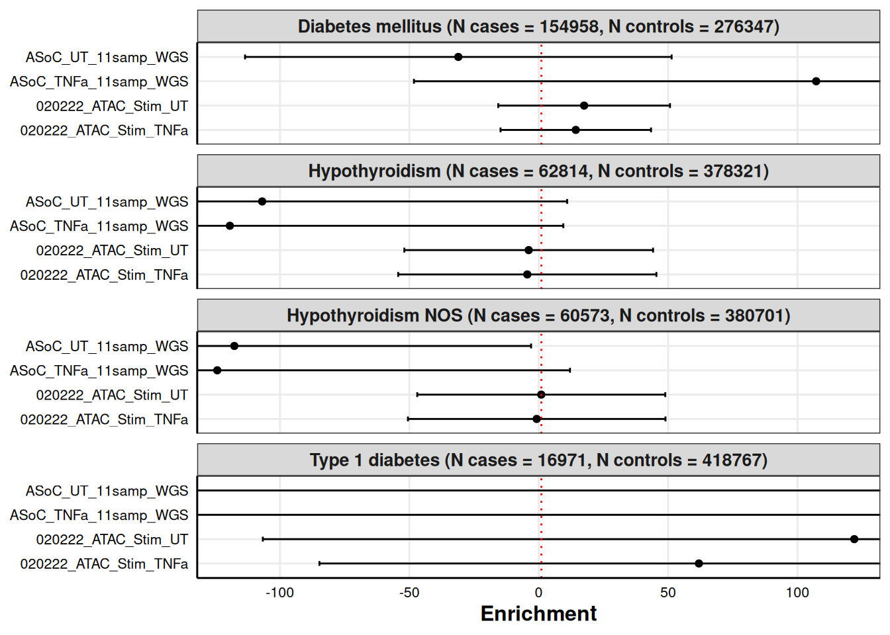
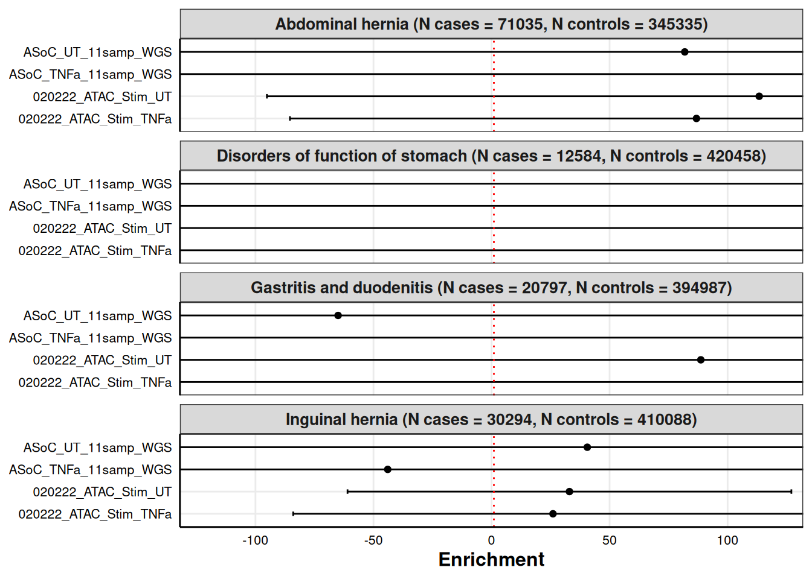
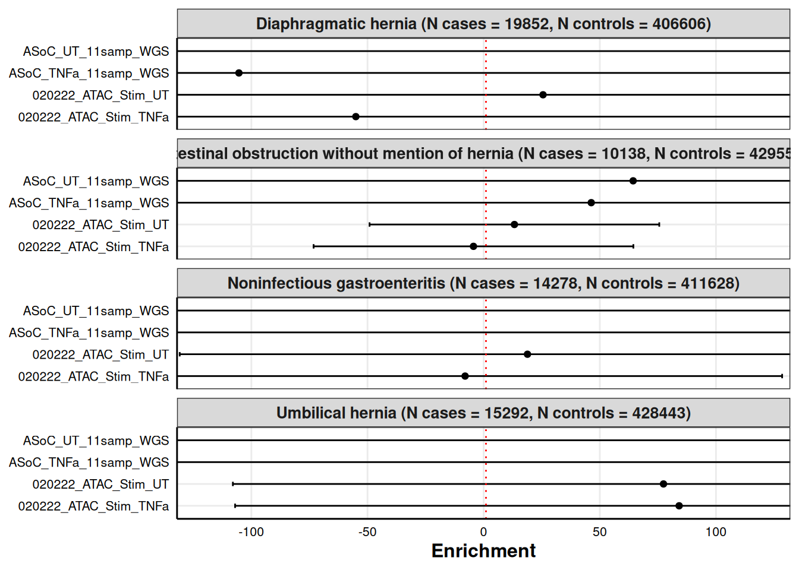

Functional Enrichment Analysis Plots
Katie Hooker
2025-02-17
Last updated: 2025-02-26
Checks: 6 1
Knit directory: organoid-rotation/
This reproducible R Markdown analysis was created with workflowr (version 1.7.1). The Checks tab describes the reproducibility checks that were applied when the results were created. The Past versions tab lists the development history.
Great! Since the R Markdown file has been committed to the Git repository, you know the exact version of the code that produced these results.
Great job! The global environment was empty. Objects defined in the global environment can affect the analysis in your R Markdown file in unknown ways. For reproduciblity it’s best to always run the code in an empty environment.
The command set.seed(20250108) was run prior to running
the code in the R Markdown file. Setting a seed ensures that any results
that rely on randomness, e.g. subsampling or permutations, are
reproducible.
Great job! Recording the operating system, R version, and package versions is critical for reproducibility.
Nice! There were no cached chunks for this analysis, so you can be confident that you successfully produced the results during this run.
Using absolute paths to the files within your workflowr project makes it difficult for you and others to run your code on a different machine. Change the absolute path(s) below to the suggested relative path(s) to make your code more reproducible.
| absolute | relative |
|---|---|
| /dartfs/rc/lab/S/Szhao/katieh/organoid-rotation/outputs/ | outputs |
| /dartfs/rc/lab/S/Szhao/katieh/organoid-rotation/data/MVP_pheno_list.csv | data/MVP_pheno_list.csv |
Great! You are using Git for version control. Tracking code development and connecting the code version to the results is critical for reproducibility.
The results in this page were generated with repository version d097ffa. See the Past versions tab to see a history of the changes made to the R Markdown and HTML files.
Note that you need to be careful to ensure that all relevant files for
the analysis have been committed to Git prior to generating the results
(you can use wflow_publish or
wflow_git_commit). workflowr only checks the R Markdown
file, but you know if there are other scripts or data files that it
depends on. Below is the status of the Git repository when the results
were generated:
Ignored files:
Ignored: .snakemake/auxiliary/
Ignored: .snakemake/conda-archive/
Ignored: .snakemake/conda/
Ignored: .snakemake/incomplete/
Ignored: .snakemake/locks/
Ignored: .snakemake/shadow/
Ignored: .snakemake/singularity/
Ignored: code/MVP-data-pull/job_error_3623155.err
Ignored: code/MVP-data-pull/job_output_3623155.out
Ignored: code/pipeline/.snakemake/auxiliary/
Ignored: code/pipeline/.snakemake/conda-archive/
Ignored: code/pipeline/.snakemake/conda/
Ignored: code/pipeline/.snakemake/incomplete/
Ignored: code/pipeline/.snakemake/locks/
Ignored: code/pipeline/.snakemake/shadow/
Ignored: code/pipeline/.snakemake/singularity/
Ignored: code/pipeline/log/
Ignored: data/extracted/
Ignored: outputs/annotations/
Ignored: outputs/munged_sumstats/
Ignored: raw-sumstats/
Untracked files:
Untracked: code/pipeline/run_ldsc_3728886.log
Unstaged changes:
Modified: code/R/clean_sumstats_binary.R
Modified: code/pipeline/.snakemake/metadata/L2RhcnRmcy9yYy9sYWIvUy9Temhhby9rYXRpZWgvb3JnYW5vaWQtcm90YXRpb24vY2xlYW5lZC1zdW1zdGF0cy9QaGVfNTMwXzFfc3Vtc3RhdHMudHh0Lmd6
Modified: code/pipeline/.snakemake/metadata/L2RhcnRmcy9yYy9sYWIvUy9Temhhby9rYXRpZWgvb3JnYW5vaWQtcm90YXRpb24vY2xlYW5lZC1zdW1zdGF0cy9QaGVfNTc4Xzhfc3Vtc3RhdHMudHh0Lmd6
Modified: code/pipeline/.snakemake/metadata/L2RhcnRmcy9yYy9sYWIvUy9Temhhby9rYXRpZWgvb3JnYW5vaWQtcm90YXRpb24vb3V0cHV0cy9hbm5vdGF0aW9ucy9QaGVfNTMwXzEvUGhlXzUzMF8xLjE0LmFubm90Lmd6
Modified: code/pipeline/.snakemake/metadata/L2RhcnRmcy9yYy9sYWIvUy9Temhhby9rYXRpZWgvb3JnYW5vaWQtcm90YXRpb24vb3V0cHV0cy9hbm5vdGF0aW9ucy9QaGVfNTMwXzEvUGhlXzUzMF8xLjE0LmwyLk0=
Modified: code/pipeline/.snakemake/metadata/L2RhcnRmcy9yYy9sYWIvUy9Temhhby9rYXRpZWgvb3JnYW5vaWQtcm90YXRpb24vb3V0cHV0cy9hbm5vdGF0aW9ucy9QaGVfNTMwXzEvUGhlXzUzMF8xLjE0LmwyLmxkc2NvcmUucGFycXVldA==
Modified: code/pipeline/.snakemake/metadata/L2RhcnRmcy9yYy9sYWIvUy9Temhhby9rYXRpZWgvb3JnYW5vaWQtcm90YXRpb24vb3V0cHV0cy9hbm5vdGF0aW9ucy9QaGVfNTMwXzEvUGhlXzUzMF8xLjE1LmFubm90Lmd6
Modified: code/pipeline/.snakemake/metadata/L2RhcnRmcy9yYy9sYWIvUy9Temhhby9rYXRpZWgvb3JnYW5vaWQtcm90YXRpb24vb3V0cHV0cy9hbm5vdGF0aW9ucy9QaGVfNTMwXzEvUGhlXzUzMF8xLjE1LmwyLk0=
Modified: code/pipeline/.snakemake/metadata/L2RhcnRmcy9yYy9sYWIvUy9Temhhby9rYXRpZWgvb3JnYW5vaWQtcm90YXRpb24vb3V0cHV0cy9hbm5vdGF0aW9ucy9QaGVfNTMwXzEvUGhlXzUzMF8xLjE1LmwyLmxkc2NvcmUucGFycXVldA==
Modified: code/pipeline/.snakemake/metadata/L2RhcnRmcy9yYy9sYWIvUy9Temhhby9rYXRpZWgvb3JnYW5vaWQtcm90YXRpb24vb3V0cHV0cy9hbm5vdGF0aW9ucy9QaGVfNTMwXzEvUGhlXzUzMF8xLjE2LmFubm90Lmd6
Modified: code/pipeline/.snakemake/metadata/L2RhcnRmcy9yYy9sYWIvUy9Temhhby9rYXRpZWgvb3JnYW5vaWQtcm90YXRpb24vb3V0cHV0cy9hbm5vdGF0aW9ucy9QaGVfNTMwXzEvUGhlXzUzMF8xLjE2LmwyLk0=
Modified: code/pipeline/.snakemake/metadata/L2RhcnRmcy9yYy9sYWIvUy9Temhhby9rYXRpZWgvb3JnYW5vaWQtcm90YXRpb24vb3V0cHV0cy9hbm5vdGF0aW9ucy9QaGVfNTMwXzEvUGhlXzUzMF8xLjE2LmwyLmxkc2NvcmUucGFycXVldA==
Modified: code/pipeline/.snakemake/metadata/L2RhcnRmcy9yYy9sYWIvUy9Temhhby9rYXRpZWgvb3JnYW5vaWQtcm90YXRpb24vb3V0cHV0cy9hbm5vdGF0aW9ucy9QaGVfNTMwXzEvUGhlXzUzMF8xLjE3LmFubm90Lmd6
Modified: code/pipeline/.snakemake/metadata/L2RhcnRmcy9yYy9sYWIvUy9Temhhby9rYXRpZWgvb3JnYW5vaWQtcm90YXRpb24vb3V0cHV0cy9hbm5vdGF0aW9ucy9QaGVfNTMwXzEvUGhlXzUzMF8xLjE3LmwyLk0=
Modified: code/pipeline/.snakemake/metadata/L2RhcnRmcy9yYy9sYWIvUy9Temhhby9rYXRpZWgvb3JnYW5vaWQtcm90YXRpb24vb3V0cHV0cy9hbm5vdGF0aW9ucy9QaGVfNTMwXzEvUGhlXzUzMF8xLjE3LmwyLmxkc2NvcmUucGFycXVldA==
Modified: code/pipeline/.snakemake/metadata/L2RhcnRmcy9yYy9sYWIvUy9Temhhby9rYXRpZWgvb3JnYW5vaWQtcm90YXRpb24vb3V0cHV0cy9hbm5vdGF0aW9ucy9QaGVfNTMwXzEvUGhlXzUzMF8xLjE4LmFubm90Lmd6
Modified: code/pipeline/.snakemake/metadata/L2RhcnRmcy9yYy9sYWIvUy9Temhhby9rYXRpZWgvb3JnYW5vaWQtcm90YXRpb24vb3V0cHV0cy9hbm5vdGF0aW9ucy9QaGVfNTMwXzEvUGhlXzUzMF8xLjE4LmwyLk0=
Modified: code/pipeline/.snakemake/metadata/L2RhcnRmcy9yYy9sYWIvUy9Temhhby9rYXRpZWgvb3JnYW5vaWQtcm90YXRpb24vb3V0cHV0cy9hbm5vdGF0aW9ucy9QaGVfNTMwXzEvUGhlXzUzMF8xLjE4LmwyLmxkc2NvcmUucGFycXVldA==
Modified: code/pipeline/.snakemake/metadata/L2RhcnRmcy9yYy9sYWIvUy9Temhhby9rYXRpZWgvb3JnYW5vaWQtcm90YXRpb24vb3V0cHV0cy9hbm5vdGF0aW9ucy9QaGVfNTMwXzEvUGhlXzUzMF8xLjE5LmFubm90Lmd6
Modified: code/pipeline/.snakemake/metadata/L2RhcnRmcy9yYy9sYWIvUy9Temhhby9rYXRpZWgvb3JnYW5vaWQtcm90YXRpb24vb3V0cHV0cy9hbm5vdGF0aW9ucy9QaGVfNTMwXzEvUGhlXzUzMF8xLjE5LmwyLk0=
Modified: code/pipeline/.snakemake/metadata/L2RhcnRmcy9yYy9sYWIvUy9Temhhby9rYXRpZWgvb3JnYW5vaWQtcm90YXRpb24vb3V0cHV0cy9hbm5vdGF0aW9ucy9QaGVfNTMwXzEvUGhlXzUzMF8xLjE5LmwyLmxkc2NvcmUucGFycXVldA==
Modified: code/pipeline/.snakemake/metadata/L2RhcnRmcy9yYy9sYWIvUy9Temhhby9rYXRpZWgvb3JnYW5vaWQtcm90YXRpb24vb3V0cHV0cy9hbm5vdGF0aW9ucy9QaGVfNTMwXzEvUGhlXzUzMF8xLjEuYW5ub3QuZ3o=
Modified: code/pipeline/.snakemake/metadata/L2RhcnRmcy9yYy9sYWIvUy9Temhhby9rYXRpZWgvb3JnYW5vaWQtcm90YXRpb24vb3V0cHV0cy9hbm5vdGF0aW9ucy9QaGVfNTMwXzEvUGhlXzUzMF8xLjEubDIuTQ==
Modified: code/pipeline/.snakemake/metadata/L2RhcnRmcy9yYy9sYWIvUy9Temhhby9rYXRpZWgvb3JnYW5vaWQtcm90YXRpb24vb3V0cHV0cy9hbm5vdGF0aW9ucy9QaGVfNTMwXzEvUGhlXzUzMF8xLjEubDIubGRzY29yZS5wYXJxdWV0
Modified: code/pipeline/.snakemake/metadata/L2RhcnRmcy9yYy9sYWIvUy9Temhhby9rYXRpZWgvb3JnYW5vaWQtcm90YXRpb24vb3V0cHV0cy9hbm5vdGF0aW9ucy9QaGVfNTMwXzEvUGhlXzUzMF8xLjEwLmFubm90Lmd6
Modified: code/pipeline/.snakemake/metadata/L2RhcnRmcy9yYy9sYWIvUy9Temhhby9rYXRpZWgvb3JnYW5vaWQtcm90YXRpb24vb3V0cHV0cy9hbm5vdGF0aW9ucy9QaGVfNTMwXzEvUGhlXzUzMF8xLjEwLmwyLk0=
Modified: code/pipeline/.snakemake/metadata/L2RhcnRmcy9yYy9sYWIvUy9Temhhby9rYXRpZWgvb3JnYW5vaWQtcm90YXRpb24vb3V0cHV0cy9hbm5vdGF0aW9ucy9QaGVfNTMwXzEvUGhlXzUzMF8xLjEwLmwyLmxkc2NvcmUucGFycXVldA==
Modified: code/pipeline/.snakemake/metadata/L2RhcnRmcy9yYy9sYWIvUy9Temhhby9rYXRpZWgvb3JnYW5vaWQtcm90YXRpb24vb3V0cHV0cy9hbm5vdGF0aW9ucy9QaGVfNTMwXzEvUGhlXzUzMF8xLjExLmFubm90Lmd6
Modified: code/pipeline/.snakemake/metadata/L2RhcnRmcy9yYy9sYWIvUy9Temhhby9rYXRpZWgvb3JnYW5vaWQtcm90YXRpb24vb3V0cHV0cy9hbm5vdGF0aW9ucy9QaGVfNTMwXzEvUGhlXzUzMF8xLjExLmwyLk0=
Modified: code/pipeline/.snakemake/metadata/L2RhcnRmcy9yYy9sYWIvUy9Temhhby9rYXRpZWgvb3JnYW5vaWQtcm90YXRpb24vb3V0cHV0cy9hbm5vdGF0aW9ucy9QaGVfNTMwXzEvUGhlXzUzMF8xLjExLmwyLmxkc2NvcmUucGFycXVldA==
Modified: code/pipeline/.snakemake/metadata/L2RhcnRmcy9yYy9sYWIvUy9Temhhby9rYXRpZWgvb3JnYW5vaWQtcm90YXRpb24vb3V0cHV0cy9hbm5vdGF0aW9ucy9QaGVfNTMwXzEvUGhlXzUzMF8xLjEyLmFubm90Lmd6
Modified: code/pipeline/.snakemake/metadata/L2RhcnRmcy9yYy9sYWIvUy9Temhhby9rYXRpZWgvb3JnYW5vaWQtcm90YXRpb24vb3V0cHV0cy9hbm5vdGF0aW9ucy9QaGVfNTMwXzEvUGhlXzUzMF8xLjEyLmwyLk0=
Modified: code/pipeline/.snakemake/metadata/L2RhcnRmcy9yYy9sYWIvUy9Temhhby9rYXRpZWgvb3JnYW5vaWQtcm90YXRpb24vb3V0cHV0cy9hbm5vdGF0aW9ucy9QaGVfNTMwXzEvUGhlXzUzMF8xLjEyLmwyLmxkc2NvcmUucGFycXVldA==
Modified: code/pipeline/.snakemake/metadata/L2RhcnRmcy9yYy9sYWIvUy9Temhhby9rYXRpZWgvb3JnYW5vaWQtcm90YXRpb24vb3V0cHV0cy9hbm5vdGF0aW9ucy9QaGVfNTMwXzEvUGhlXzUzMF8xLjEzLmFubm90Lmd6
Modified: code/pipeline/.snakemake/metadata/L2RhcnRmcy9yYy9sYWIvUy9Temhhby9rYXRpZWgvb3JnYW5vaWQtcm90YXRpb24vb3V0cHV0cy9hbm5vdGF0aW9ucy9QaGVfNTMwXzEvUGhlXzUzMF8xLjEzLmwyLk0=
Modified: code/pipeline/.snakemake/metadata/L2RhcnRmcy9yYy9sYWIvUy9Temhhby9rYXRpZWgvb3JnYW5vaWQtcm90YXRpb24vb3V0cHV0cy9hbm5vdGF0aW9ucy9QaGVfNTMwXzEvUGhlXzUzMF8xLjEzLmwyLmxkc2NvcmUucGFycXVldA==
Modified: code/pipeline/.snakemake/metadata/L2RhcnRmcy9yYy9sYWIvUy9Temhhby9rYXRpZWgvb3JnYW5vaWQtcm90YXRpb24vb3V0cHV0cy9hbm5vdGF0aW9ucy9QaGVfNTMwXzEvUGhlXzUzMF8xLjIuYW5ub3QuZ3o=
Modified: code/pipeline/.snakemake/metadata/L2RhcnRmcy9yYy9sYWIvUy9Temhhby9rYXRpZWgvb3JnYW5vaWQtcm90YXRpb24vb3V0cHV0cy9hbm5vdGF0aW9ucy9QaGVfNTMwXzEvUGhlXzUzMF8xLjIubDIuTQ==
Modified: code/pipeline/.snakemake/metadata/L2RhcnRmcy9yYy9sYWIvUy9Temhhby9rYXRpZWgvb3JnYW5vaWQtcm90YXRpb24vb3V0cHV0cy9hbm5vdGF0aW9ucy9QaGVfNTMwXzEvUGhlXzUzMF8xLjIubDIubGRzY29yZS5wYXJxdWV0
Modified: code/pipeline/.snakemake/metadata/L2RhcnRmcy9yYy9sYWIvUy9Temhhby9rYXRpZWgvb3JnYW5vaWQtcm90YXRpb24vb3V0cHV0cy9hbm5vdGF0aW9ucy9QaGVfNTMwXzEvUGhlXzUzMF8xLjIwLmFubm90Lmd6
Modified: code/pipeline/.snakemake/metadata/L2RhcnRmcy9yYy9sYWIvUy9Temhhby9rYXRpZWgvb3JnYW5vaWQtcm90YXRpb24vb3V0cHV0cy9hbm5vdGF0aW9ucy9QaGVfNTMwXzEvUGhlXzUzMF8xLjIwLmwyLk0=
Modified: code/pipeline/.snakemake/metadata/L2RhcnRmcy9yYy9sYWIvUy9Temhhby9rYXRpZWgvb3JnYW5vaWQtcm90YXRpb24vb3V0cHV0cy9hbm5vdGF0aW9ucy9QaGVfNTMwXzEvUGhlXzUzMF8xLjIwLmwyLmxkc2NvcmUucGFycXVldA==
Modified: code/pipeline/.snakemake/metadata/L2RhcnRmcy9yYy9sYWIvUy9Temhhby9rYXRpZWgvb3JnYW5vaWQtcm90YXRpb24vb3V0cHV0cy9hbm5vdGF0aW9ucy9QaGVfNTMwXzEvUGhlXzUzMF8xLjIxLmFubm90Lmd6
Modified: code/pipeline/.snakemake/metadata/L2RhcnRmcy9yYy9sYWIvUy9Temhhby9rYXRpZWgvb3JnYW5vaWQtcm90YXRpb24vb3V0cHV0cy9hbm5vdGF0aW9ucy9QaGVfNTMwXzEvUGhlXzUzMF8xLjIxLmwyLk0=
Modified: code/pipeline/.snakemake/metadata/L2RhcnRmcy9yYy9sYWIvUy9Temhhby9rYXRpZWgvb3JnYW5vaWQtcm90YXRpb24vb3V0cHV0cy9hbm5vdGF0aW9ucy9QaGVfNTMwXzEvUGhlXzUzMF8xLjIxLmwyLmxkc2NvcmUucGFycXVldA==
Modified: code/pipeline/.snakemake/metadata/L2RhcnRmcy9yYy9sYWIvUy9Temhhby9rYXRpZWgvb3JnYW5vaWQtcm90YXRpb24vb3V0cHV0cy9hbm5vdGF0aW9ucy9QaGVfNTMwXzEvUGhlXzUzMF8xLjIyLmFubm90Lmd6
Modified: code/pipeline/.snakemake/metadata/L2RhcnRmcy9yYy9sYWIvUy9Temhhby9rYXRpZWgvb3JnYW5vaWQtcm90YXRpb24vb3V0cHV0cy9hbm5vdGF0aW9ucy9QaGVfNTMwXzEvUGhlXzUzMF8xLjIyLmwyLk0=
Modified: code/pipeline/.snakemake/metadata/L2RhcnRmcy9yYy9sYWIvUy9Temhhby9rYXRpZWgvb3JnYW5vaWQtcm90YXRpb24vb3V0cHV0cy9hbm5vdGF0aW9ucy9QaGVfNTMwXzEvUGhlXzUzMF8xLjIyLmwyLmxkc2NvcmUucGFycXVldA==
Modified: code/pipeline/.snakemake/metadata/L2RhcnRmcy9yYy9sYWIvUy9Temhhby9rYXRpZWgvb3JnYW5vaWQtcm90YXRpb24vb3V0cHV0cy9hbm5vdGF0aW9ucy9QaGVfNTMwXzEvUGhlXzUzMF8xLjMuYW5ub3QuZ3o=
Modified: code/pipeline/.snakemake/metadata/L2RhcnRmcy9yYy9sYWIvUy9Temhhby9rYXRpZWgvb3JnYW5vaWQtcm90YXRpb24vb3V0cHV0cy9hbm5vdGF0aW9ucy9QaGVfNTMwXzEvUGhlXzUzMF8xLjMubDIuTQ==
Modified: code/pipeline/.snakemake/metadata/L2RhcnRmcy9yYy9sYWIvUy9Temhhby9rYXRpZWgvb3JnYW5vaWQtcm90YXRpb24vb3V0cHV0cy9hbm5vdGF0aW9ucy9QaGVfNTMwXzEvUGhlXzUzMF8xLjMubDIubGRzY29yZS5wYXJxdWV0
Modified: code/pipeline/.snakemake/metadata/L2RhcnRmcy9yYy9sYWIvUy9Temhhby9rYXRpZWgvb3JnYW5vaWQtcm90YXRpb24vb3V0cHV0cy9hbm5vdGF0aW9ucy9QaGVfNTMwXzEvUGhlXzUzMF8xLjQuYW5ub3QuZ3o=
Modified: code/pipeline/.snakemake/metadata/L2RhcnRmcy9yYy9sYWIvUy9Temhhby9rYXRpZWgvb3JnYW5vaWQtcm90YXRpb24vb3V0cHV0cy9hbm5vdGF0aW9ucy9QaGVfNTMwXzEvUGhlXzUzMF8xLjQubDIuTQ==
Modified: code/pipeline/.snakemake/metadata/L2RhcnRmcy9yYy9sYWIvUy9Temhhby9rYXRpZWgvb3JnYW5vaWQtcm90YXRpb24vb3V0cHV0cy9hbm5vdGF0aW9ucy9QaGVfNTMwXzEvUGhlXzUzMF8xLjQubDIubGRzY29yZS5wYXJxdWV0
Modified: code/pipeline/.snakemake/metadata/L2RhcnRmcy9yYy9sYWIvUy9Temhhby9rYXRpZWgvb3JnYW5vaWQtcm90YXRpb24vb3V0cHV0cy9hbm5vdGF0aW9ucy9QaGVfNTMwXzEvUGhlXzUzMF8xLjUuYW5ub3QuZ3o=
Modified: code/pipeline/.snakemake/metadata/L2RhcnRmcy9yYy9sYWIvUy9Temhhby9rYXRpZWgvb3JnYW5vaWQtcm90YXRpb24vb3V0cHV0cy9hbm5vdGF0aW9ucy9QaGVfNTMwXzEvUGhlXzUzMF8xLjUubDIuTQ==
Modified: code/pipeline/.snakemake/metadata/L2RhcnRmcy9yYy9sYWIvUy9Temhhby9rYXRpZWgvb3JnYW5vaWQtcm90YXRpb24vb3V0cHV0cy9hbm5vdGF0aW9ucy9QaGVfNTMwXzEvUGhlXzUzMF8xLjUubDIubGRzY29yZS5wYXJxdWV0
Modified: code/pipeline/.snakemake/metadata/L2RhcnRmcy9yYy9sYWIvUy9Temhhby9rYXRpZWgvb3JnYW5vaWQtcm90YXRpb24vb3V0cHV0cy9hbm5vdGF0aW9ucy9QaGVfNTMwXzEvUGhlXzUzMF8xLjYuYW5ub3QuZ3o=
Modified: code/pipeline/.snakemake/metadata/L2RhcnRmcy9yYy9sYWIvUy9Temhhby9rYXRpZWgvb3JnYW5vaWQtcm90YXRpb24vb3V0cHV0cy9hbm5vdGF0aW9ucy9QaGVfNTMwXzEvUGhlXzUzMF8xLjYubDIuTQ==
Modified: code/pipeline/.snakemake/metadata/L2RhcnRmcy9yYy9sYWIvUy9Temhhby9rYXRpZWgvb3JnYW5vaWQtcm90YXRpb24vb3V0cHV0cy9hbm5vdGF0aW9ucy9QaGVfNTMwXzEvUGhlXzUzMF8xLjYubDIubGRzY29yZS5wYXJxdWV0
Modified: code/pipeline/.snakemake/metadata/L2RhcnRmcy9yYy9sYWIvUy9Temhhby9rYXRpZWgvb3JnYW5vaWQtcm90YXRpb24vb3V0cHV0cy9hbm5vdGF0aW9ucy9QaGVfNTMwXzEvUGhlXzUzMF8xLjcuYW5ub3QuZ3o=
Modified: code/pipeline/.snakemake/metadata/L2RhcnRmcy9yYy9sYWIvUy9Temhhby9rYXRpZWgvb3JnYW5vaWQtcm90YXRpb24vb3V0cHV0cy9hbm5vdGF0aW9ucy9QaGVfNTMwXzEvUGhlXzUzMF8xLjcubDIuTQ==
Modified: code/pipeline/.snakemake/metadata/L2RhcnRmcy9yYy9sYWIvUy9Temhhby9rYXRpZWgvb3JnYW5vaWQtcm90YXRpb24vb3V0cHV0cy9hbm5vdGF0aW9ucy9QaGVfNTMwXzEvUGhlXzUzMF8xLjcubDIubGRzY29yZS5wYXJxdWV0
Modified: code/pipeline/.snakemake/metadata/L2RhcnRmcy9yYy9sYWIvUy9Temhhby9rYXRpZWgvb3JnYW5vaWQtcm90YXRpb24vb3V0cHV0cy9hbm5vdGF0aW9ucy9QaGVfNTMwXzEvUGhlXzUzMF8xLjguYW5ub3QuZ3o=
Modified: code/pipeline/.snakemake/metadata/L2RhcnRmcy9yYy9sYWIvUy9Temhhby9rYXRpZWgvb3JnYW5vaWQtcm90YXRpb24vb3V0cHV0cy9hbm5vdGF0aW9ucy9QaGVfNTMwXzEvUGhlXzUzMF8xLjgubDIuTQ==
Modified: code/pipeline/.snakemake/metadata/L2RhcnRmcy9yYy9sYWIvUy9Temhhby9rYXRpZWgvb3JnYW5vaWQtcm90YXRpb24vb3V0cHV0cy9hbm5vdGF0aW9ucy9QaGVfNTMwXzEvUGhlXzUzMF8xLjgubDIubGRzY29yZS5wYXJxdWV0
Modified: code/pipeline/.snakemake/metadata/L2RhcnRmcy9yYy9sYWIvUy9Temhhby9rYXRpZWgvb3JnYW5vaWQtcm90YXRpb24vb3V0cHV0cy9hbm5vdGF0aW9ucy9QaGVfNTMwXzEvUGhlXzUzMF8xLjkuYW5ub3QuZ3o=
Modified: code/pipeline/.snakemake/metadata/L2RhcnRmcy9yYy9sYWIvUy9Temhhby9rYXRpZWgvb3JnYW5vaWQtcm90YXRpb24vb3V0cHV0cy9hbm5vdGF0aW9ucy9QaGVfNTMwXzEvUGhlXzUzMF8xLjkubDIuTQ==
Modified: code/pipeline/.snakemake/metadata/L2RhcnRmcy9yYy9sYWIvUy9Temhhby9rYXRpZWgvb3JnYW5vaWQtcm90YXRpb24vb3V0cHV0cy9hbm5vdGF0aW9ucy9QaGVfNTMwXzEvUGhlXzUzMF8xLjkubDIubGRzY29yZS5wYXJxdWV0
Modified: code/pipeline/.snakemake/metadata/L2RhcnRmcy9yYy9sYWIvUy9Temhhby9rYXRpZWgvb3JnYW5vaWQtcm90YXRpb24vb3V0cHV0cy9hbm5vdGF0aW9ucy9QaGVfNTc4XzgvUGhlXzU3OF84LjE0LmFubm90Lmd6
Modified: code/pipeline/.snakemake/metadata/L2RhcnRmcy9yYy9sYWIvUy9Temhhby9rYXRpZWgvb3JnYW5vaWQtcm90YXRpb24vb3V0cHV0cy9hbm5vdGF0aW9ucy9QaGVfNTc4XzgvUGhlXzU3OF84LjE0LmwyLk0=
Modified: code/pipeline/.snakemake/metadata/L2RhcnRmcy9yYy9sYWIvUy9Temhhby9rYXRpZWgvb3JnYW5vaWQtcm90YXRpb24vb3V0cHV0cy9hbm5vdGF0aW9ucy9QaGVfNTc4XzgvUGhlXzU3OF84LjE0LmwyLmxkc2NvcmUucGFycXVldA==
Modified: code/pipeline/.snakemake/metadata/L2RhcnRmcy9yYy9sYWIvUy9Temhhby9rYXRpZWgvb3JnYW5vaWQtcm90YXRpb24vb3V0cHV0cy9hbm5vdGF0aW9ucy9QaGVfNTc4XzgvUGhlXzU3OF84LjE1LmFubm90Lmd6
Modified: code/pipeline/.snakemake/metadata/L2RhcnRmcy9yYy9sYWIvUy9Temhhby9rYXRpZWgvb3JnYW5vaWQtcm90YXRpb24vb3V0cHV0cy9hbm5vdGF0aW9ucy9QaGVfNTc4XzgvUGhlXzU3OF84LjE1LmwyLk0=
Modified: code/pipeline/.snakemake/metadata/L2RhcnRmcy9yYy9sYWIvUy9Temhhby9rYXRpZWgvb3JnYW5vaWQtcm90YXRpb24vb3V0cHV0cy9hbm5vdGF0aW9ucy9QaGVfNTc4XzgvUGhlXzU3OF84LjE1LmwyLmxkc2NvcmUucGFycXVldA==
Modified: code/pipeline/.snakemake/metadata/L2RhcnRmcy9yYy9sYWIvUy9Temhhby9rYXRpZWgvb3JnYW5vaWQtcm90YXRpb24vb3V0cHV0cy9hbm5vdGF0aW9ucy9QaGVfNTc4XzgvUGhlXzU3OF84LjE2LmFubm90Lmd6
Modified: code/pipeline/.snakemake/metadata/L2RhcnRmcy9yYy9sYWIvUy9Temhhby9rYXRpZWgvb3JnYW5vaWQtcm90YXRpb24vb3V0cHV0cy9hbm5vdGF0aW9ucy9QaGVfNTc4XzgvUGhlXzU3OF84LjE2LmwyLk0=
Modified: code/pipeline/.snakemake/metadata/L2RhcnRmcy9yYy9sYWIvUy9Temhhby9rYXRpZWgvb3JnYW5vaWQtcm90YXRpb24vb3V0cHV0cy9hbm5vdGF0aW9ucy9QaGVfNTc4XzgvUGhlXzU3OF84LjE2LmwyLmxkc2NvcmUucGFycXVldA==
Modified: code/pipeline/.snakemake/metadata/L2RhcnRmcy9yYy9sYWIvUy9Temhhby9rYXRpZWgvb3JnYW5vaWQtcm90YXRpb24vb3V0cHV0cy9hbm5vdGF0aW9ucy9QaGVfNTc4XzgvUGhlXzU3OF84LjE3LmFubm90Lmd6
Modified: code/pipeline/.snakemake/metadata/L2RhcnRmcy9yYy9sYWIvUy9Temhhby9rYXRpZWgvb3JnYW5vaWQtcm90YXRpb24vb3V0cHV0cy9hbm5vdGF0aW9ucy9QaGVfNTc4XzgvUGhlXzU3OF84LjE3LmwyLk0=
Modified: code/pipeline/.snakemake/metadata/L2RhcnRmcy9yYy9sYWIvUy9Temhhby9rYXRpZWgvb3JnYW5vaWQtcm90YXRpb24vb3V0cHV0cy9hbm5vdGF0aW9ucy9QaGVfNTc4XzgvUGhlXzU3OF84LjE3LmwyLmxkc2NvcmUucGFycXVldA==
Modified: code/pipeline/.snakemake/metadata/L2RhcnRmcy9yYy9sYWIvUy9Temhhby9rYXRpZWgvb3JnYW5vaWQtcm90YXRpb24vb3V0cHV0cy9hbm5vdGF0aW9ucy9QaGVfNTc4XzgvUGhlXzU3OF84LjE4LmFubm90Lmd6
Modified: code/pipeline/.snakemake/metadata/L2RhcnRmcy9yYy9sYWIvUy9Temhhby9rYXRpZWgvb3JnYW5vaWQtcm90YXRpb24vb3V0cHV0cy9hbm5vdGF0aW9ucy9QaGVfNTc4XzgvUGhlXzU3OF84LjE4LmwyLk0=
Modified: code/pipeline/.snakemake/metadata/L2RhcnRmcy9yYy9sYWIvUy9Temhhby9rYXRpZWgvb3JnYW5vaWQtcm90YXRpb24vb3V0cHV0cy9hbm5vdGF0aW9ucy9QaGVfNTc4XzgvUGhlXzU3OF84LjE4LmwyLmxkc2NvcmUucGFycXVldA==
Modified: code/pipeline/.snakemake/metadata/L2RhcnRmcy9yYy9sYWIvUy9Temhhby9rYXRpZWgvb3JnYW5vaWQtcm90YXRpb24vb3V0cHV0cy9hbm5vdGF0aW9ucy9QaGVfNTc4XzgvUGhlXzU3OF84LjE5LmFubm90Lmd6
Modified: code/pipeline/.snakemake/metadata/L2RhcnRmcy9yYy9sYWIvUy9Temhhby9rYXRpZWgvb3JnYW5vaWQtcm90YXRpb24vb3V0cHV0cy9hbm5vdGF0aW9ucy9QaGVfNTc4XzgvUGhlXzU3OF84LjE5LmwyLk0=
Modified: code/pipeline/.snakemake/metadata/L2RhcnRmcy9yYy9sYWIvUy9Temhhby9rYXRpZWgvb3JnYW5vaWQtcm90YXRpb24vb3V0cHV0cy9hbm5vdGF0aW9ucy9QaGVfNTc4XzgvUGhlXzU3OF84LjE5LmwyLmxkc2NvcmUucGFycXVldA==
Modified: code/pipeline/.snakemake/metadata/L2RhcnRmcy9yYy9sYWIvUy9Temhhby9rYXRpZWgvb3JnYW5vaWQtcm90YXRpb24vb3V0cHV0cy9hbm5vdGF0aW9ucy9QaGVfNTc4XzgvUGhlXzU3OF84LjEuYW5ub3QuZ3o=
Modified: code/pipeline/.snakemake/metadata/L2RhcnRmcy9yYy9sYWIvUy9Temhhby9rYXRpZWgvb3JnYW5vaWQtcm90YXRpb24vb3V0cHV0cy9hbm5vdGF0aW9ucy9QaGVfNTc4XzgvUGhlXzU3OF84LjEubDIuTQ==
Modified: code/pipeline/.snakemake/metadata/L2RhcnRmcy9yYy9sYWIvUy9Temhhby9rYXRpZWgvb3JnYW5vaWQtcm90YXRpb24vb3V0cHV0cy9hbm5vdGF0aW9ucy9QaGVfNTc4XzgvUGhlXzU3OF84LjEubDIubGRzY29yZS5wYXJxdWV0
Modified: code/pipeline/.snakemake/metadata/L2RhcnRmcy9yYy9sYWIvUy9Temhhby9rYXRpZWgvb3JnYW5vaWQtcm90YXRpb24vb3V0cHV0cy9hbm5vdGF0aW9ucy9QaGVfNTc4XzgvUGhlXzU3OF84LjEwLmFubm90Lmd6
Modified: code/pipeline/.snakemake/metadata/L2RhcnRmcy9yYy9sYWIvUy9Temhhby9rYXRpZWgvb3JnYW5vaWQtcm90YXRpb24vb3V0cHV0cy9hbm5vdGF0aW9ucy9QaGVfNTc4XzgvUGhlXzU3OF84LjEwLmwyLk0=
Modified: code/pipeline/.snakemake/metadata/L2RhcnRmcy9yYy9sYWIvUy9Temhhby9rYXRpZWgvb3JnYW5vaWQtcm90YXRpb24vb3V0cHV0cy9hbm5vdGF0aW9ucy9QaGVfNTc4XzgvUGhlXzU3OF84LjEwLmwyLmxkc2NvcmUucGFycXVldA==
Modified: code/pipeline/.snakemake/metadata/L2RhcnRmcy9yYy9sYWIvUy9Temhhby9rYXRpZWgvb3JnYW5vaWQtcm90YXRpb24vb3V0cHV0cy9hbm5vdGF0aW9ucy9QaGVfNTc4XzgvUGhlXzU3OF84LjExLmFubm90Lmd6
Modified: code/pipeline/.snakemake/metadata/L2RhcnRmcy9yYy9sYWIvUy9Temhhby9rYXRpZWgvb3JnYW5vaWQtcm90YXRpb24vb3V0cHV0cy9hbm5vdGF0aW9ucy9QaGVfNTc4XzgvUGhlXzU3OF84LjExLmwyLk0=
Modified: code/pipeline/.snakemake/metadata/L2RhcnRmcy9yYy9sYWIvUy9Temhhby9rYXRpZWgvb3JnYW5vaWQtcm90YXRpb24vb3V0cHV0cy9hbm5vdGF0aW9ucy9QaGVfNTc4XzgvUGhlXzU3OF84LjExLmwyLmxkc2NvcmUucGFycXVldA==
Modified: code/pipeline/.snakemake/metadata/L2RhcnRmcy9yYy9sYWIvUy9Temhhby9rYXRpZWgvb3JnYW5vaWQtcm90YXRpb24vb3V0cHV0cy9hbm5vdGF0aW9ucy9QaGVfNTc4XzgvUGhlXzU3OF84LjEyLmFubm90Lmd6
Modified: code/pipeline/.snakemake/metadata/L2RhcnRmcy9yYy9sYWIvUy9Temhhby9rYXRpZWgvb3JnYW5vaWQtcm90YXRpb24vb3V0cHV0cy9hbm5vdGF0aW9ucy9QaGVfNTc4XzgvUGhlXzU3OF84LjEyLmwyLk0=
Modified: code/pipeline/.snakemake/metadata/L2RhcnRmcy9yYy9sYWIvUy9Temhhby9rYXRpZWgvb3JnYW5vaWQtcm90YXRpb24vb3V0cHV0cy9hbm5vdGF0aW9ucy9QaGVfNTc4XzgvUGhlXzU3OF84LjEyLmwyLmxkc2NvcmUucGFycXVldA==
Modified: code/pipeline/.snakemake/metadata/L2RhcnRmcy9yYy9sYWIvUy9Temhhby9rYXRpZWgvb3JnYW5vaWQtcm90YXRpb24vb3V0cHV0cy9hbm5vdGF0aW9ucy9QaGVfNTc4XzgvUGhlXzU3OF84LjEzLmFubm90Lmd6
Modified: code/pipeline/.snakemake/metadata/L2RhcnRmcy9yYy9sYWIvUy9Temhhby9rYXRpZWgvb3JnYW5vaWQtcm90YXRpb24vb3V0cHV0cy9hbm5vdGF0aW9ucy9QaGVfNTc4XzgvUGhlXzU3OF84LjEzLmwyLk0=
Modified: code/pipeline/.snakemake/metadata/L2RhcnRmcy9yYy9sYWIvUy9Temhhby9rYXRpZWgvb3JnYW5vaWQtcm90YXRpb24vb3V0cHV0cy9hbm5vdGF0aW9ucy9QaGVfNTc4XzgvUGhlXzU3OF84LjEzLmwyLmxkc2NvcmUucGFycXVldA==
Modified: code/pipeline/.snakemake/metadata/L2RhcnRmcy9yYy9sYWIvUy9Temhhby9rYXRpZWgvb3JnYW5vaWQtcm90YXRpb24vb3V0cHV0cy9hbm5vdGF0aW9ucy9QaGVfNTc4XzgvUGhlXzU3OF84LjIuYW5ub3QuZ3o=
Modified: code/pipeline/.snakemake/metadata/L2RhcnRmcy9yYy9sYWIvUy9Temhhby9rYXRpZWgvb3JnYW5vaWQtcm90YXRpb24vb3V0cHV0cy9hbm5vdGF0aW9ucy9QaGVfNTc4XzgvUGhlXzU3OF84LjIubDIuTQ==
Modified: code/pipeline/.snakemake/metadata/L2RhcnRmcy9yYy9sYWIvUy9Temhhby9rYXRpZWgvb3JnYW5vaWQtcm90YXRpb24vb3V0cHV0cy9hbm5vdGF0aW9ucy9QaGVfNTc4XzgvUGhlXzU3OF84LjIubDIubGRzY29yZS5wYXJxdWV0
Modified: code/pipeline/.snakemake/metadata/L2RhcnRmcy9yYy9sYWIvUy9Temhhby9rYXRpZWgvb3JnYW5vaWQtcm90YXRpb24vb3V0cHV0cy9hbm5vdGF0aW9ucy9QaGVfNTc4XzgvUGhlXzU3OF84LjIwLmFubm90Lmd6
Modified: code/pipeline/.snakemake/metadata/L2RhcnRmcy9yYy9sYWIvUy9Temhhby9rYXRpZWgvb3JnYW5vaWQtcm90YXRpb24vb3V0cHV0cy9hbm5vdGF0aW9ucy9QaGVfNTc4XzgvUGhlXzU3OF84LjIwLmwyLk0=
Modified: code/pipeline/.snakemake/metadata/L2RhcnRmcy9yYy9sYWIvUy9Temhhby9rYXRpZWgvb3JnYW5vaWQtcm90YXRpb24vb3V0cHV0cy9hbm5vdGF0aW9ucy9QaGVfNTc4XzgvUGhlXzU3OF84LjIwLmwyLmxkc2NvcmUucGFycXVldA==
Modified: code/pipeline/.snakemake/metadata/L2RhcnRmcy9yYy9sYWIvUy9Temhhby9rYXRpZWgvb3JnYW5vaWQtcm90YXRpb24vb3V0cHV0cy9hbm5vdGF0aW9ucy9QaGVfNTc4XzgvUGhlXzU3OF84LjIxLmFubm90Lmd6
Modified: code/pipeline/.snakemake/metadata/L2RhcnRmcy9yYy9sYWIvUy9Temhhby9rYXRpZWgvb3JnYW5vaWQtcm90YXRpb24vb3V0cHV0cy9hbm5vdGF0aW9ucy9QaGVfNTc4XzgvUGhlXzU3OF84LjIxLmwyLk0=
Modified: code/pipeline/.snakemake/metadata/L2RhcnRmcy9yYy9sYWIvUy9Temhhby9rYXRpZWgvb3JnYW5vaWQtcm90YXRpb24vb3V0cHV0cy9hbm5vdGF0aW9ucy9QaGVfNTc4XzgvUGhlXzU3OF84LjIxLmwyLmxkc2NvcmUucGFycXVldA==
Modified: code/pipeline/.snakemake/metadata/L2RhcnRmcy9yYy9sYWIvUy9Temhhby9rYXRpZWgvb3JnYW5vaWQtcm90YXRpb24vb3V0cHV0cy9hbm5vdGF0aW9ucy9QaGVfNTc4XzgvUGhlXzU3OF84LjIyLmFubm90Lmd6
Modified: code/pipeline/.snakemake/metadata/L2RhcnRmcy9yYy9sYWIvUy9Temhhby9rYXRpZWgvb3JnYW5vaWQtcm90YXRpb24vb3V0cHV0cy9hbm5vdGF0aW9ucy9QaGVfNTc4XzgvUGhlXzU3OF84LjIyLmwyLk0=
Modified: code/pipeline/.snakemake/metadata/L2RhcnRmcy9yYy9sYWIvUy9Temhhby9rYXRpZWgvb3JnYW5vaWQtcm90YXRpb24vb3V0cHV0cy9hbm5vdGF0aW9ucy9QaGVfNTc4XzgvUGhlXzU3OF84LjIyLmwyLmxkc2NvcmUucGFycXVldA==
Modified: code/pipeline/.snakemake/metadata/L2RhcnRmcy9yYy9sYWIvUy9Temhhby9rYXRpZWgvb3JnYW5vaWQtcm90YXRpb24vb3V0cHV0cy9hbm5vdGF0aW9ucy9QaGVfNTc4XzgvUGhlXzU3OF84LjMuYW5ub3QuZ3o=
Modified: code/pipeline/.snakemake/metadata/L2RhcnRmcy9yYy9sYWIvUy9Temhhby9rYXRpZWgvb3JnYW5vaWQtcm90YXRpb24vb3V0cHV0cy9hbm5vdGF0aW9ucy9QaGVfNTc4XzgvUGhlXzU3OF84LjMubDIuTQ==
Modified: code/pipeline/.snakemake/metadata/L2RhcnRmcy9yYy9sYWIvUy9Temhhby9rYXRpZWgvb3JnYW5vaWQtcm90YXRpb24vb3V0cHV0cy9hbm5vdGF0aW9ucy9QaGVfNTc4XzgvUGhlXzU3OF84LjMubDIubGRzY29yZS5wYXJxdWV0
Modified: code/pipeline/.snakemake/metadata/L2RhcnRmcy9yYy9sYWIvUy9Temhhby9rYXRpZWgvb3JnYW5vaWQtcm90YXRpb24vb3V0cHV0cy9hbm5vdGF0aW9ucy9QaGVfNTc4XzgvUGhlXzU3OF84LjQuYW5ub3QuZ3o=
Modified: code/pipeline/.snakemake/metadata/L2RhcnRmcy9yYy9sYWIvUy9Temhhby9rYXRpZWgvb3JnYW5vaWQtcm90YXRpb24vb3V0cHV0cy9hbm5vdGF0aW9ucy9QaGVfNTc4XzgvUGhlXzU3OF84LjQubDIuTQ==
Modified: code/pipeline/.snakemake/metadata/L2RhcnRmcy9yYy9sYWIvUy9Temhhby9rYXRpZWgvb3JnYW5vaWQtcm90YXRpb24vb3V0cHV0cy9hbm5vdGF0aW9ucy9QaGVfNTc4XzgvUGhlXzU3OF84LjQubDIubGRzY29yZS5wYXJxdWV0
Modified: code/pipeline/.snakemake/metadata/L2RhcnRmcy9yYy9sYWIvUy9Temhhby9rYXRpZWgvb3JnYW5vaWQtcm90YXRpb24vb3V0cHV0cy9hbm5vdGF0aW9ucy9QaGVfNTc4XzgvUGhlXzU3OF84LjUuYW5ub3QuZ3o=
Modified: code/pipeline/.snakemake/metadata/L2RhcnRmcy9yYy9sYWIvUy9Temhhby9rYXRpZWgvb3JnYW5vaWQtcm90YXRpb24vb3V0cHV0cy9hbm5vdGF0aW9ucy9QaGVfNTc4XzgvUGhlXzU3OF84LjUubDIuTQ==
Modified: code/pipeline/.snakemake/metadata/L2RhcnRmcy9yYy9sYWIvUy9Temhhby9rYXRpZWgvb3JnYW5vaWQtcm90YXRpb24vb3V0cHV0cy9hbm5vdGF0aW9ucy9QaGVfNTc4XzgvUGhlXzU3OF84LjUubDIubGRzY29yZS5wYXJxdWV0
Modified: code/pipeline/.snakemake/metadata/L2RhcnRmcy9yYy9sYWIvUy9Temhhby9rYXRpZWgvb3JnYW5vaWQtcm90YXRpb24vb3V0cHV0cy9hbm5vdGF0aW9ucy9QaGVfNTc4XzgvUGhlXzU3OF84LjYuYW5ub3QuZ3o=
Modified: code/pipeline/.snakemake/metadata/L2RhcnRmcy9yYy9sYWIvUy9Temhhby9rYXRpZWgvb3JnYW5vaWQtcm90YXRpb24vb3V0cHV0cy9hbm5vdGF0aW9ucy9QaGVfNTc4XzgvUGhlXzU3OF84LjYubDIuTQ==
Modified: code/pipeline/.snakemake/metadata/L2RhcnRmcy9yYy9sYWIvUy9Temhhby9rYXRpZWgvb3JnYW5vaWQtcm90YXRpb24vb3V0cHV0cy9hbm5vdGF0aW9ucy9QaGVfNTc4XzgvUGhlXzU3OF84LjYubDIubGRzY29yZS5wYXJxdWV0
Modified: code/pipeline/.snakemake/metadata/L2RhcnRmcy9yYy9sYWIvUy9Temhhby9rYXRpZWgvb3JnYW5vaWQtcm90YXRpb24vb3V0cHV0cy9hbm5vdGF0aW9ucy9QaGVfNTc4XzgvUGhlXzU3OF84LjcuYW5ub3QuZ3o=
Modified: code/pipeline/.snakemake/metadata/L2RhcnRmcy9yYy9sYWIvUy9Temhhby9rYXRpZWgvb3JnYW5vaWQtcm90YXRpb24vb3V0cHV0cy9hbm5vdGF0aW9ucy9QaGVfNTc4XzgvUGhlXzU3OF84LjcubDIuTQ==
Modified: code/pipeline/.snakemake/metadata/L2RhcnRmcy9yYy9sYWIvUy9Temhhby9rYXRpZWgvb3JnYW5vaWQtcm90YXRpb24vb3V0cHV0cy9hbm5vdGF0aW9ucy9QaGVfNTc4XzgvUGhlXzU3OF84LjcubDIubGRzY29yZS5wYXJxdWV0
Modified: code/pipeline/.snakemake/metadata/L2RhcnRmcy9yYy9sYWIvUy9Temhhby9rYXRpZWgvb3JnYW5vaWQtcm90YXRpb24vb3V0cHV0cy9hbm5vdGF0aW9ucy9QaGVfNTc4XzgvUGhlXzU3OF84LjguYW5ub3QuZ3o=
Modified: code/pipeline/.snakemake/metadata/L2RhcnRmcy9yYy9sYWIvUy9Temhhby9rYXRpZWgvb3JnYW5vaWQtcm90YXRpb24vb3V0cHV0cy9hbm5vdGF0aW9ucy9QaGVfNTc4XzgvUGhlXzU3OF84LjgubDIuTQ==
Modified: code/pipeline/.snakemake/metadata/L2RhcnRmcy9yYy9sYWIvUy9Temhhby9rYXRpZWgvb3JnYW5vaWQtcm90YXRpb24vb3V0cHV0cy9hbm5vdGF0aW9ucy9QaGVfNTc4XzgvUGhlXzU3OF84LjgubDIubGRzY29yZS5wYXJxdWV0
Modified: code/pipeline/.snakemake/metadata/L2RhcnRmcy9yYy9sYWIvUy9Temhhby9rYXRpZWgvb3JnYW5vaWQtcm90YXRpb24vb3V0cHV0cy9hbm5vdGF0aW9ucy9QaGVfNTc4XzgvUGhlXzU3OF84LjkuYW5ub3QuZ3o=
Modified: code/pipeline/.snakemake/metadata/L2RhcnRmcy9yYy9sYWIvUy9Temhhby9rYXRpZWgvb3JnYW5vaWQtcm90YXRpb24vb3V0cHV0cy9hbm5vdGF0aW9ucy9QaGVfNTc4XzgvUGhlXzU3OF84LjkubDIuTQ==
Modified: code/pipeline/.snakemake/metadata/L2RhcnRmcy9yYy9sYWIvUy9Temhhby9rYXRpZWgvb3JnYW5vaWQtcm90YXRpb24vb3V0cHV0cy9hbm5vdGF0aW9ucy9QaGVfNTc4XzgvUGhlXzU3OF84LjkubDIubGRzY29yZS5wYXJxdWV0
Modified: code/pipeline/.snakemake/metadata/L2RhcnRmcy9yYy9sYWIvUy9Temhhby9rYXRpZWgvb3JnYW5vaWQtcm90YXRpb24vb3V0cHV0cy9tdW5nZWRfc3Vtc3RhdHMvUGhlXzU3OF84X211bmdlZF9zdW1zdGF0cy5wYXJxdWV0
Modified: code/pipeline/.snakemake/metadata/L2RhcnRmcy9yYy9sYWIvUy9Temhhby9rYXRpZWgvb3JnYW5vaWQtcm90YXRpb24vb3V0cHV0cy9tdW5nZWRfc3Vtc3RhdHMvUGhlXzUzMF8xX211bmdlZF9zdW1zdGF0cy5wYXJxdWV0
Modified: code/pipeline/.snakemake/metadata/L2RhcnRmcy9yYy9sYWIvUy9Temhhby9rYXRpZWgvb3JnYW5vaWQtcm90YXRpb24vb3V0cHV0cy9yZXN1bHRzL1BoZV81MzBfMV9lbnJpY2htZW50LnJlc3VsdHM=
Modified: code/pipeline/.snakemake/metadata/L2RhcnRmcy9yYy9sYWIvUy9Temhhby9rYXRpZWgvb3JnYW5vaWQtcm90YXRpb24vb3V0cHV0cy9yZXN1bHRzL1BoZV81MzBfMV9zaWduaWZfbG9jaS50eHQ=
Modified: code/pipeline/.snakemake/metadata/L2RhcnRmcy9yYy9sYWIvUy9Temhhby9rYXRpZWgvb3JnYW5vaWQtcm90YXRpb24vb3V0cHV0cy9yZXN1bHRzL1BoZV81NzhfOF9lbnJpY2htZW50LnJlc3VsdHM=
Modified: code/pipeline/.snakemake/metadata/L2RhcnRmcy9yYy9sYWIvUy9Temhhby9rYXRpZWgvb3JnYW5vaWQtcm90YXRpb24vb3V0cHV0cy9yZXN1bHRzL1BoZV81NzhfOF9zaWduaWZfbG9jaS50eHQ=
Modified: code/pipeline/run_ldsc.sbatch
Modified: code/pipeline/run_ldsc_array.sbatch
Modified: code/pipeline/snake-ldsc-kh_TEST.smk
Modified: outputs/results/CircChol_enrichment.log
Modified: outputs/results/CircChol_enrichment.results
Modified: outputs/results/DoDM_enrichment.log
Modified: outputs/results/DoDM_enrichment.results
Modified: outputs/results/DoThy_enrichment.log
Modified: outputs/results/DoThy_enrichment.results
Modified: outputs/results/GIIBS_enrichment.log
Modified: outputs/results/GIIBS_enrichment.results
Modified: outputs/results/GIOth_enrichment.log
Modified: outputs/results/GIOth_enrichment.results
Modified: outputs/results/GIPolyp_enrichment.log
Modified: outputs/results/GIPolyp_enrichment.results
Modified: outputs/results/GIReflux_enrichment.log
Modified: outputs/results/GIReflux_enrichment.results
Modified: outputs/results/GIUlcer_enrichment.log
Modified: outputs/results/GIUlcer_enrichment.results
Modified: outputs/results/Phe_153_enrichment.log
Modified: outputs/results/Phe_153_enrichment.results
Modified: outputs/results/Phe_208_enrichment.log
Modified: outputs/results/Phe_208_enrichment.results
Modified: outputs/results/Phe_241_1_enrichment.log
Modified: outputs/results/Phe_241_1_enrichment.results
Modified: outputs/results/Phe_241_enrichment.log
Modified: outputs/results/Phe_241_enrichment.results
Modified: outputs/results/Phe_244_4_enrichment.log
Modified: outputs/results/Phe_244_4_enrichment.results
Modified: outputs/results/Phe_244_enrichment.log
Modified: outputs/results/Phe_244_enrichment.results
Modified: outputs/results/Phe_250_1_enrichment.log
Modified: outputs/results/Phe_250_1_enrichment.results
Modified: outputs/results/Phe_250_22_enrichment.log
Modified: outputs/results/Phe_250_22_enrichment.results
Modified: outputs/results/Phe_250_23_enrichment.log
Modified: outputs/results/Phe_250_23_enrichment.results
Modified: outputs/results/Phe_250_24_enrichment.log
Modified: outputs/results/Phe_250_24_enrichment.results
Modified: outputs/results/Phe_250_2_enrichment.log
Modified: outputs/results/Phe_250_2_enrichment.results
Modified: outputs/results/Phe_250_41_enrichment.log
Modified: outputs/results/Phe_250_41_enrichment.results
Modified: outputs/results/Phe_250_42_enrichment.log
Modified: outputs/results/Phe_250_42_enrichment.results
Modified: outputs/results/Phe_250_4_enrichment.log
Modified: outputs/results/Phe_250_4_enrichment.results
Modified: outputs/results/Phe_250_enrichment.log
Modified: outputs/results/Phe_250_enrichment.results
Modified: outputs/results/Phe_260_enrichment.log
Modified: outputs/results/Phe_260_enrichment.results
Modified: outputs/results/Phe_261_2_enrichment.log
Modified: outputs/results/Phe_261_2_enrichment.results
Modified: outputs/results/Phe_261_4_enrichment.log
Modified: outputs/results/Phe_261_4_enrichment.results
Modified: outputs/results/Phe_261_enrichment.log
Modified: outputs/results/Phe_261_enrichment.results
Modified: outputs/results/Phe_269_enrichment.log
Modified: outputs/results/Phe_269_enrichment.results
Modified: outputs/results/Phe_271_3_enrichment.log
Modified: outputs/results/Phe_271_3_enrichment.results
Modified: outputs/results/Phe_271_enrichment.log
Modified: outputs/results/Phe_271_enrichment.results
Modified: outputs/results/Phe_272_11_enrichment.log
Modified: outputs/results/Phe_272_11_enrichment.results
Modified: outputs/results/Phe_272_12_enrichment.log
Modified: outputs/results/Phe_272_12_enrichment.results
Modified: outputs/results/Phe_272_13_enrichment.log
Modified: outputs/results/Phe_272_13_enrichment.results
Modified: outputs/results/Phe_272_1_enrichment.log
Modified: outputs/results/Phe_272_1_enrichment.results
Modified: outputs/results/Phe_272_enrichment.log
Modified: outputs/results/Phe_272_enrichment.results
Modified: outputs/results/Phe_275_enrichment.log
Modified: outputs/results/Phe_275_enrichment.results
Modified: outputs/results/Phe_276_12_enrichment.log
Modified: outputs/results/Phe_276_12_enrichment.results
Modified: outputs/results/Phe_276_13_enrichment.log
Modified: outputs/results/Phe_276_13_enrichment.results
Modified: outputs/results/Phe_276_14_enrichment.log
Modified: outputs/results/Phe_276_14_enrichment.results
Modified: outputs/results/Phe_276_1_enrichment.log
Modified: outputs/results/Phe_276_1_enrichment.results
Modified: outputs/results/Phe_276_4_enrichment.log
Modified: outputs/results/Phe_276_4_enrichment.results
Modified: outputs/results/Phe_276_5_enrichment.log
Modified: outputs/results/Phe_276_5_enrichment.results
Modified: outputs/results/Phe_276_enrichment.log
Modified: outputs/results/Phe_276_enrichment.results
Modified: outputs/results/Phe_278_11_enrichment.log
Modified: outputs/results/Phe_278_11_enrichment.results
Modified: outputs/results/Phe_278_1_enrichment.log
Modified: outputs/results/Phe_278_1_enrichment.results
Modified: outputs/results/Phe_278_enrichment.log
Modified: outputs/results/Phe_278_enrichment.results
Modified: outputs/results/Phe_530_11_enrichment.log
Modified: outputs/results/Phe_530_11_enrichment.results
Modified: outputs/results/Phe_530_13_enrichment.log
Modified: outputs/results/Phe_530_13_enrichment.results
Modified: outputs/results/Phe_530_14_enrichment.log
Modified: outputs/results/Phe_530_14_enrichment.results
Modified: outputs/results/Phe_530_1_enrichment.log
Modified: outputs/results/Phe_530_1_enrichment.results
Modified: outputs/results/Phe_530_enrichment.log
Modified: outputs/results/Phe_530_enrichment.results
Modified: outputs/results/Phe_531_enrichment.log
Modified: outputs/results/Phe_531_enrichment.results
Modified: outputs/results/Phe_535_enrichment.log
Modified: outputs/results/Phe_535_enrichment.results
Modified: outputs/results/Phe_536_enrichment.log
Modified: outputs/results/Phe_536_enrichment.results
Modified: outputs/results/Phe_550_1_enrichment.log
Modified: outputs/results/Phe_550_1_enrichment.results
Modified: outputs/results/Phe_550_2_enrichment.log
Modified: outputs/results/Phe_550_2_enrichment.results
Modified: outputs/results/Phe_550_4_enrichment.log
Modified: outputs/results/Phe_550_4_enrichment.results
Modified: outputs/results/Phe_550_enrichment.log
Modified: outputs/results/Phe_550_enrichment.results
Modified: outputs/results/Phe_558_enrichment.log
Modified: outputs/results/Phe_558_enrichment.results
Modified: outputs/results/Phe_560_enrichment.log
Modified: outputs/results/Phe_560_enrichment.results
Modified: outputs/results/Phe_561_1_enrichment.log
Modified: outputs/results/Phe_561_1_enrichment.results
Modified: outputs/results/Phe_561_enrichment.log
Modified: outputs/results/Phe_561_enrichment.results
Modified: outputs/results/Phe_562_1_enrichment.log
Modified: outputs/results/Phe_562_1_enrichment.results
Modified: outputs/results/Phe_562_2_enrichment.log
Modified: outputs/results/Phe_562_2_enrichment.results
Modified: outputs/results/Phe_562_enrichment.log
Modified: outputs/results/Phe_562_enrichment.results
Modified: outputs/results/Phe_563_enrichment.log
Modified: outputs/results/Phe_563_enrichment.results
Modified: outputs/results/Phe_564_1_enrichment.log
Modified: outputs/results/Phe_564_1_enrichment.results
Modified: outputs/results/Phe_564_enrichment.log
Modified: outputs/results/Phe_564_enrichment.results
Modified: outputs/results/Phe_565_enrichment.log
Modified: outputs/results/Phe_565_enrichment.results
Modified: outputs/results/Phe_571_51_enrichment.log
Modified: outputs/results/Phe_571_51_enrichment.results
Modified: outputs/results/Phe_571_5_enrichment.log
Modified: outputs/results/Phe_571_5_enrichment.results
Modified: outputs/results/Phe_571_enrichment.log
Modified: outputs/results/Phe_571_enrichment.results
Modified: outputs/results/Phe_573_7_enrichment.log
Modified: outputs/results/Phe_573_7_enrichment.results
Modified: outputs/results/Phe_574_1_enrichment.log
Modified: outputs/results/Phe_574_1_enrichment.results
Modified: outputs/results/Phe_574_enrichment.log
Modified: outputs/results/Phe_574_enrichment.results
Modified: outputs/results/Phe_577_enrichment.log
Modified: outputs/results/Phe_577_enrichment.results
Modified: outputs/results/Phe_578_2_enrichment.log
Modified: outputs/results/Phe_578_2_enrichment.results
Modified: outputs/results/Phe_578_8_enrichment.log
Modified: outputs/results/Phe_578_8_enrichment.results
Modified: outputs/results/Phe_578_9_enrichment.log
Modified: outputs/results/Phe_578_9_enrichment.results
Modified: outputs/results/Phe_578_enrichment.log
Modified: outputs/results/Phe_578_enrichment.results
Modified: outputs/results/Phe_785_enrichment.log
Modified: outputs/results/Phe_785_enrichment.results
Modified: outputs/results/Phe_789_enrichment.log
Modified: outputs/results/Phe_789_enrichment.results
Deleted: outputs/results/combined_results.txt
Deleted: outputs/results/concatenate_results.sh
Note that any generated files, e.g. HTML, png, CSS, etc., are not included in this status report because it is ok for generated content to have uncommitted changes.
These are the previous versions of the repository in which changes were
made to the R Markdown (analysis/enrichment-plots.Rmd) and
HTML (docs/enrichment-plots.html) files. If you’ve
configured a remote Git repository (see ?wflow_git_remote),
click on the hyperlinks in the table below to view the files as they
were in that past version.
| File | Version | Author | Date | Message |
|---|---|---|---|---|
| Rmd | d097ffa | akhooker | 2025-02-26 | Update enrichment plots |
| html | 4d11dd6 | akhooker | 2025-02-21 | Build site. |
| Rmd | 95e31a3 | akhooker | 2025-02-21 | Update enrichment plots |
| html | 931961b | akhooker | 2025-02-21 | Build site. |
| Rmd | e26f15e | akhooker | 2025-02-21 | Visualize enrichment results |
This script is for plotting the outputs of the functional enrichment analysis run on the 97 selected MVP phenotypes.
Plotting function
enrichment_plot <- function(data, group, xlim=NULL){
group = sym(group)
p <- ggplot(data, aes(x = Enrichment, y = !!group))+
geom_point() +
xlab("Enrichment") +
geom_errorbarh(aes(xmin=Enrichment-ci, xmax=Enrichment+ci), height=.2) +
facet_wrap(Trait_label~.,ncol = 1) +
theme_bw() +
geom_vline(xintercept = 1,linetype="dotted", colour = "red") +
theme(axis.ticks = element_blank(),
panel.grid.minor = element_blank(),
axis.line = element_line(colour = "black"),
axis.text = element_text(size = 8, colour = "black"),
axis.title = element_text(face="bold",size = 12),
strip.text = element_text(face="bold",size = 10),
panel.spacing.x = unit(0.6,units = "cm"),
axis.title.y = element_blank(),
legend.position = "none",
plot.title = element_text(hjust = 0.5))
if(!is.null(xlim)){
p <- p + coord_cartesian(xlim = xlim)
}
print(p)
}Compiling all trait results
output_path <- "/dartfs/rc/lab/S/Szhao/katieh/organoid-rotation/outputs/"
# Reading in trait abbreviations and their corresponding trait names
pheno_list <- read.csv("/dartfs/rc/lab/S/Szhao/katieh/organoid-rotation/data/MVP_pheno_list.csv")
# Fixing traits that are not unique after shortening
pheno_list[pheno_list$Description == "Irritable Bowel Syndrome (IBS)",]$Description <- "Irritable Bowel Syndrome survey result"
pheno_list[pheno_list$Description == "glucose (finger stick, mean, inv-norm transformed)",]$Description <- "Glucose finger stick result"
pheno_list <- pheno_list %>%
mutate(Short_desc = str_trim(gsub("\\(.*?\\)", "", Description))) %>%
mutate(Short_desc = str_to_sentence(Short_desc)) %>%
mutate(Short_desc = gsub("(?i)Gerd", "GERD", Short_desc)) %>%
mutate(Short_desc = gsub("(?i)nos", "NOS", Short_desc))
odd_rows <- seq_len(nrow(pheno_list)) %% 2
pheno_list_unique <- pheno_list[odd_rows==1,]
pheno_list_unique$N_desc <- NA
for (trait in pheno_list_unique$Trait){
if (pheno_list_unique[pheno_list_unique$Trait == trait,]$Category == "Labs") {
N_string = paste0("N total = ", pheno_list_unique[pheno_list_unique$Trait == trait,]$num_samples.EUR)
} else {
N_string = paste0("N cases = ", pheno_list_unique[pheno_list_unique$Trait == trait,]$num_cases.EUR, ", N controls = ", pheno_list_unique[pheno_list_unique$Trait == trait,]$num_controls.EUR)
}
pheno_list_unique[pheno_list_unique$Trait == trait,]$N_desc <- N_string
}
pheno_list_unique <- pheno_list_unique %>% mutate(Short_desc = paste0(Short_desc, " (", N_desc, ")"))
traits <- pheno_list_unique$Trait
traitslab <- pheno_list_unique$Short_desc
all_traits <- NULL
for (i in 1:length(traits)){
efile1 <- read.table(paste0(output_path, sprintf("results/%s_enrichment.results", traits[i])),
header=T)
enrich <- efile1[1:4,c(1,5,6,7)]
enrich$ci <- 1.96*enrich$Enrichment_std_error
enrich$Trait <- traits[i]
enrich$Trait_label <- traitslab[i]
if(is.null(all_traits)){
all_traits <- enrich
} else{
all_traits <- rbind(all_traits, enrich)
}
}Plot all traits, four at a time
for (i in seq(1, nrow(all_traits)-4, 16)){
enrichment_plot(all_traits[i:(i+15),], group="Category", xlim=c(-120,120))
}
| Version | Author | Date |
|---|---|---|
| 931961b | akhooker | 2025-02-21 |

| Version | Author | Date |
|---|---|---|
| 931961b | akhooker | 2025-02-21 |

| Version | Author | Date |
|---|---|---|
| 931961b | akhooker | 2025-02-21 |

| Version | Author | Date |
|---|---|---|
| 931961b | akhooker | 2025-02-21 |

| Version | Author | Date |
|---|---|---|
| 931961b | akhooker | 2025-02-21 |

| Version | Author | Date |
|---|---|---|
| 931961b | akhooker | 2025-02-21 |

| Version | Author | Date |
|---|---|---|
| 931961b | akhooker | 2025-02-21 |

| Version | Author | Date |
|---|---|---|
| 931961b | akhooker | 2025-02-21 |

| Version | Author | Date |
|---|---|---|
| 931961b | akhooker | 2025-02-21 |

| Version | Author | Date |
|---|---|---|
| 931961b | akhooker | 2025-02-21 |

| Version | Author | Date |
|---|---|---|
| 931961b | akhooker | 2025-02-21 |

| Version | Author | Date |
|---|---|---|
| 931961b | akhooker | 2025-02-21 |



| Version | Author | Date |
|---|---|---|
| 931961b | akhooker | 2025-02-21 |

| Version | Author | Date |
|---|---|---|
| 931961b | akhooker | 2025-02-21 |

| Version | Author | Date |
|---|---|---|
| 931961b | akhooker | 2025-02-21 |

| Version | Author | Date |
|---|---|---|
| 931961b | akhooker | 2025-02-21 |

| Version | Author | Date |
|---|---|---|
| 931961b | akhooker | 2025-02-21 |

| Version | Author | Date |
|---|---|---|
| 931961b | akhooker | 2025-02-21 |

| Version | Author | Date |
|---|---|---|
| 931961b | akhooker | 2025-02-21 |

| Version | Author | Date |
|---|---|---|
| 931961b | akhooker | 2025-02-21 |
# Last trait
enrichment_plot(all_traits[385:388,], group="Category", xlim=c(-120,120))
| Version | Author | Date |
|---|---|---|
| 931961b | akhooker | 2025-02-21 |
Looking at which traits have abnormally large enrichment or large standard error
hist(all_traits$Enrichment, breaks = 50)
| Version | Author | Date |
|---|---|---|
| 4d11dd6 | akhooker | 2025-02-21 |
hist(all_traits$Enrichment_std_error, breaks = 20)
| Version | Author | Date |
|---|---|---|
| 4d11dd6 | akhooker | 2025-02-21 |
subset(all_traits, Enrichment < -200) Category Enrichment Enrichment_std_error Enrichment_p
43 ASoC_TNFa_11samp_WGS -340.19 849.48 0.5474200
45 020222_ATAC_Stim_TNFa -283.47 615.67 0.1161100
46 020222_ATAC_Stim_UT -432.00 936.77 0.0287740
48 ASoC_UT_11samp_WGS -607.22 1559.80 0.5059500
56 ASoC_UT_11samp_WGS -210.37 297.04 0.3212400
59 ASoC_TNFa_11samp_WGS -1157.60 90540.00 0.4641100
60 ASoC_UT_11samp_WGS -772.84 25614.00 0.5908200
64 ASoC_UT_11samp_WGS -234.50 321.65 0.2071700
79 ASoC_TNFa_11samp_WGS -280.39 261.10 0.1093200
92 ASoC_UT_11samp_WGS -299.19 142.39 0.0104890
96 ASoC_UT_11samp_WGS -448.60 272.57 0.0129160
112 ASoC_UT_11samp_WGS -233.72 331.65 0.4152400
133 020222_ATAC_Stim_TNFa -521.23 62562.00 0.2211900
134 020222_ATAC_Stim_UT -458.69 53992.00 0.1490900
139 ASoC_TNFa_11samp_WGS -478.54 1003.40 0.0336300
148 ASoC_UT_11samp_WGS -288.99 264.54 0.1159900
149 020222_ATAC_Stim_TNFa -2060.80 652970.00 0.1324800
150 020222_ATAC_Stim_UT -2172.70 665740.00 0.1276300
164 ASoC_UT_11samp_WGS -818.25 17814.00 0.1271800
168 ASoC_UT_11samp_WGS -693.13 1499.40 0.0722220
181 020222_ATAC_Stim_TNFa -328.90 664.92 0.0143000
182 020222_ATAC_Stim_UT -332.57 687.65 0.0248120
189 020222_ATAC_Stim_TNFa -207.71 1460.30 0.3211500
190 020222_ATAC_Stim_UT -382.70 2816.80 0.1177200
191 ASoC_TNFa_11samp_WGS -1366.10 9837.00 0.3266200
192 ASoC_UT_11samp_WGS -527.29 3605.70 0.6575000
229 020222_ATAC_Stim_TNFa -203.77 1822.40 0.5837800
232 ASoC_UT_11samp_WGS -1127.00 10072.00 0.3952000
259 ASoC_TNFa_11samp_WGS -230.01 406.13 0.5068200
261 020222_ATAC_Stim_TNFa -568.13 15694.00 0.3368100
262 020222_ATAC_Stim_UT -220.62 6363.50 0.7076300
283 ASoC_TNFa_11samp_WGS -336.59 484.85 0.1673100
295 ASoC_TNFa_11samp_WGS -3132.10 218900.00 0.6561200
307 ASoC_TNFa_11samp_WGS -522.75 697.29 0.1240000
308 ASoC_UT_11samp_WGS -719.97 771.01 0.0021607
312 ASoC_UT_11samp_WGS -684.60 1093.10 0.0407770
328 ASoC_UT_11samp_WGS -231.67 229.10 0.2605100
335 ASoC_TNFa_11samp_WGS -253.92 857.94 0.7017400
336 ASoC_UT_11samp_WGS -732.17 2566.90 0.1306100
344 ASoC_UT_11samp_WGS -733.82 1150.20 0.0089515
347 ASoC_TNFa_11samp_WGS -473.95 2063.70 0.3909500
348 ASoC_UT_11samp_WGS -1190.40 4755.70 0.0165780
356 ASoC_UT_11samp_WGS -516.78 16074.00 0.8473100
376 ASoC_UT_11samp_WGS -317.74 921.93 0.7227900
ci Trait
43 1664.9808 GIIBS
45 1206.7132 GIOth
46 1836.0692 GIOth
48 3057.2080 GIOth
56 582.1984 GIReflux
59 177458.4000 GIUlcer
60 50203.4400 GIUlcer
64 630.4340 Glucose_FS_Mean_INT
79 511.7560 Mg_BSP_Mean_INT
92 279.0844 Phe_241
96 534.2372 Phe_241_1
112 650.0340 Phe_250_1
133 122621.5200 Phe_250_41
134 105824.3200 Phe_250_41
139 1966.6640 Phe_250_42
148 518.4984 Phe_261
149 1279821.2000 Phe_261_2
150 1304850.4000 Phe_261_2
164 34915.4400 Phe_271
168 2938.8240 Phe_271_3
181 1303.2432 Phe_272_12
182 1347.7940 Phe_272_12
189 2862.1880 Phe_275
190 5520.9280 Phe_275
191 19280.5200 Phe_275
192 7067.1720 Phe_275
229 3571.9040 Phe_278_11
232 19741.1200 Phe_278_11
259 796.0148 Phe_535
261 30760.2400 Phe_536
262 12472.4600 Phe_536
283 950.3060 Phe_558
295 429044.0000 Phe_561_1
307 1366.6884 Phe_562_2
308 1511.1796 Phe_562_2
312 2142.4760 Phe_563
328 449.0360 Phe_571
335 1681.5624 Phe_571_51
336 5031.1240 Phe_571_51
344 2254.3920 Phe_574
347 4044.8520 Phe_574_1
348 9321.1720 Phe_574_1
356 31505.0400 Phe_578
376 1806.9828 Phe_789
Trait_label
43 Irritable bowel syndrome survey result (N cases = 15794, N controls = 299874)
45 Other digestive system problems (N cases = 17700, N controls = 297968)
46 Other digestive system problems (N cases = 17700, N controls = 297968)
48 Other digestive system problems (N cases = 17700, N controls = 297968)
56 Acid reflux/GERD (N cases = 107942, N controls = 207726)
59 Peptic ulcers (N cases = 10929, N controls = 304739)
60 Peptic ulcers (N cases = 10929, N controls = 304739)
64 Glucose finger stick result (N total = 69680)
79 Magnesium (N total = 145571)
92 Nontoxic nodular goiter (N cases = 15286, N controls = 431005)
96 Nontoxic uninodular goiter (N cases = 12152, N controls = 433970)
112 Type 1 diabetes (N cases = 16971, N controls = 418767)
133 Impaired fasting glucose (N cases = 40912, N controls = 388446)
134 Impaired fasting glucose (N cases = 40912, N controls = 388446)
139 Other abnormal glucose (N cases = 31907, N controls = 383507)
148 Vitamin deficiency (N cases = 90650, N controls = 318995)
149 Vitamin b-complex deficiencies (N cases = 21840, N controls = 415740)
150 Vitamin b-complex deficiencies (N cases = 21840, N controls = 415740)
164 Disorders of carbohydrate transport and metabolism (N cases = 12349, N controls = 426073)
168 Intestinal disaccharidase deficiencies and disaccharide malabsorption (N cases = 11891, N controls = 426970)
181 Hyperglyceridemia (N cases = 17425, N controls = 419299)
182 Hyperglyceridemia (N cases = 17425, N controls = 419299)
189 Disorders of mineral metabolism (N cases = 24136, N controls = 403344)
190 Disorders of mineral metabolism (N cases = 24136, N controls = 403344)
191 Disorders of mineral metabolism (N cases = 24136, N controls = 403344)
192 Disorders of mineral metabolism (N cases = 24136, N controls = 403344)
229 Morbid obesity (N cases = 45933, N controls = 385784)
232 Morbid obesity (N cases = 45933, N controls = 385784)
259 Gastritis and duodenitis (N cases = 20797, N controls = 394987)
261 Disorders of function of stomach (N cases = 12584, N controls = 420458)
262 Disorders of function of stomach (N cases = 12584, N controls = 420458)
283 Noninfectious gastroenteritis (N cases = 14278, N controls = 411628)
295 Diarrhea (N cases = 47462, N controls = 359574)
307 Diverticulitis (N cases = 10900, N controls = 428348)
308 Diverticulitis (N cases = 10900, N controls = 428348)
312 Constipation (N cases = 48515, N controls = 358488)
328 Chronic liver disease and cirrhosis (N cases = 30744, N controls = 401215)
335 Cirrhosis of liver without mention of alcohol (N cases = 13367, N controls = 433864)
336 Cirrhosis of liver without mention of alcohol (N cases = 13367, N controls = 433864)
344 Cholelithiasis and cholecystitis (N cases = 23182, N controls = 416631)
347 Cholelithiasis (N cases = 18237, N controls = 421370)
348 Cholelithiasis (N cases = 18237, N controls = 421370)
356 Gastrointestinal hemorrhage (N cases = 47936, N controls = 366187)
376 Nausea and vomiting (N cases = 30059, N controls = 381553)subset(all_traits, Enrichment > 200) Category Enrichment Enrichment_std_error Enrichment_p
49 020222_ATAC_Stim_TNFa 203.07 192.93 0.017767
51 ASoC_TNFa_11samp_WGS 1044.20 1084.20 0.115120
58 020222_ATAC_Stim_UT 784.71 31501.00 0.100500
63 ASoC_TNFa_11samp_WGS 303.27 449.04 0.198240
88 ASoC_UT_11samp_WGS 250.99 355.37 0.426890
111 ASoC_TNFa_11samp_WGS 745.31 772.25 0.065780
123 ASoC_TNFa_11samp_WGS 340.97 229.36 0.130210
127 ASoC_TNFa_11samp_WGS 215.68 126.12 0.069948
132 ASoC_UT_11samp_WGS 505.03 1738.60 0.337360
135 ASoC_TNFa_11samp_WGS 257.81 35890.00 0.923770
136 ASoC_UT_11samp_WGS 3659.90 505770.00 0.212770
140 ASoC_UT_11samp_WGS 228.56 598.54 0.434630
143 ASoC_TNFa_11samp_WGS 670.96 599.73 0.040669
144 ASoC_UT_11samp_WGS 1088.90 1120.90 0.103530
151 ASoC_TNFa_11samp_WGS 2624.50 814250.00 0.604970
152 ASoC_UT_11samp_WGS 1243.20 348680.00 0.805990
158 020222_ATAC_Stim_UT 248.33 4738.20 0.313150
159 ASoC_TNFa_11samp_WGS 2610.50 57584.00 0.010215
163 ASoC_TNFa_11samp_WGS 371.50 7525.80 0.645240
167 ASoC_TNFa_11samp_WGS 373.86 843.10 0.512270
183 ASoC_TNFa_11samp_WGS 601.43 1248.40 0.140680
184 ASoC_UT_11samp_WGS 564.16 1112.90 0.052757
196 ASoC_UT_11samp_WGS 1052.20 1209.00 0.336470
200 ASoC_UT_11samp_WGS 1609.80 2119.00 0.368120
204 ASoC_UT_11samp_WGS 836.16 1422.80 0.463500
208 ASoC_UT_11samp_WGS 448.33 637.74 0.438740
219 ASoC_TNFa_11samp_WGS 402.30 441.98 0.192550
220 ASoC_UT_11samp_WGS 269.25 332.97 0.299280
223 ASoC_TNFa_11samp_WGS 264.76 204.94 0.118120
231 ASoC_TNFa_11samp_WGS 2254.30 20885.00 0.258380
251 ASoC_TNFa_11samp_WGS 400.85 497.13 0.142770
252 ASoC_UT_11samp_WGS 308.75 375.77 0.114630
263 ASoC_TNFa_11samp_WGS 1201.80 34207.00 0.445230
264 ASoC_UT_11samp_WGS 1447.40 37701.00 0.289340
276 ASoC_UT_11samp_WGS 1309.00 4034.30 0.124600
279 ASoC_TNFa_11samp_WGS 460.74 592.21 0.181120
280 ASoC_UT_11samp_WGS 275.48 442.70 0.400160
292 ASoC_UT_11samp_WGS 270.23 460.97 0.317310
293 020222_ATAC_Stim_TNFa 619.37 42070.00 0.661790
294 020222_ATAC_Stim_UT 1288.10 86550.00 0.403900
296 ASoC_UT_11samp_WGS 5564.30 377800.00 0.615860
299 ASoC_TNFa_11samp_WGS 341.18 255.53 0.066137
303 ASoC_TNFa_11samp_WGS 323.38 234.08 0.058684
311 ASoC_TNFa_11samp_WGS 599.04 1226.40 0.288500
315 ASoC_TNFa_11samp_WGS 776.75 1140.80 0.120670
316 ASoC_UT_11samp_WGS 355.83 882.40 0.655080
320 ASoC_UT_11samp_WGS 263.82 317.34 0.380690
324 ASoC_UT_11samp_WGS 243.49 517.09 0.624640
351 ASoC_TNFa_11samp_WGS 833.62 1119.70 0.040311
352 ASoC_UT_11samp_WGS 707.52 1130.40 0.023924
355 ASoC_TNFa_11samp_WGS 337.66 8702.80 0.851610
364 ASoC_UT_11samp_WGS 277.45 268.45 0.115530
ci Trait
49 378.1428 GIPolyp
51 2125.0320 GIPolyp
58 61741.9600 GIUlcer
63 880.1184 Glucose_FS_Mean_INT
88 696.5252 Phe_208
111 1513.6100 Phe_250_1
123 449.5456 Phe_250_23
127 247.1952 Phe_250_24
132 3407.6560 Phe_250_4
135 70344.4000 Phe_250_41
136 991309.2000 Phe_250_41
140 1173.1384 Phe_250_42
143 1175.4708 Phe_260
144 2196.9640 Phe_260
151 1595930.0000 Phe_261_2
152 683412.8000 Phe_261_2
158 9286.8720 Phe_269
159 112864.6400 Phe_269
163 14750.5680 Phe_271
167 1652.4760 Phe_271_3
183 2446.8640 Phe_272_12
184 2181.2840 Phe_272_12
196 2369.6400 Phe_276
200 4153.2400 Phe_276_1
204 2788.6880 Phe_276_12
208 1249.9704 Phe_276_13
219 866.2808 Phe_276_5
220 652.6212 Phe_276_5
223 401.6824 Phe_278
231 40934.6000 Phe_278_11
251 974.3748 Phe_530_14
252 736.5092 Phe_530_14
263 67045.7200 Phe_536
264 73893.9600 Phe_536
276 7907.2280 Phe_550_2
279 1160.7316 Phe_550_4
280 867.6920 Phe_550_4
292 903.5012 Phe_561
293 82457.2000 Phe_561_1
294 169638.0000 Phe_561_1
296 740488.0000 Phe_561_1
299 500.8388 Phe_562
303 458.7968 Phe_562_1
311 2403.7440 Phe_563
315 2235.9680 Phe_564
316 1729.5040 Phe_564
320 621.9864 Phe_564_1
324 1013.4964 Phe_565
351 2194.6120 Phe_577
352 2215.5840 Phe_577
355 17057.4880 Phe_578
364 526.1620 Phe_578_8
Trait_label
49 Colon polyps (N cases = 73737, N controls = 241931)
51 Colon polyps (N cases = 73737, N controls = 241931)
58 Peptic ulcers (N cases = 10929, N controls = 304739)
63 Glucose finger stick result (N total = 69680)
88 Benign neoplasm of colon (N cases = 125095, N controls = 270155)
111 Type 1 diabetes (N cases = 16971, N controls = 418767)
123 Type 2 diabetes with ophthalmic manifestations (N cases = 28561, N controls = 402796)
127 Type 2 diabetes with neurological manifestations (N cases = 59205, N controls = 375439)
132 Abnormal glucose (N cases = 69640, N controls = 338815)
135 Impaired fasting glucose (N cases = 40912, N controls = 388446)
136 Impaired fasting glucose (N cases = 40912, N controls = 388446)
140 Other abnormal glucose (N cases = 31907, N controls = 383507)
143 Protein-calorie malnutrition (N cases = 13964, N controls = 422281)
144 Protein-calorie malnutrition (N cases = 13964, N controls = 422281)
151 Vitamin b-complex deficiencies (N cases = 21840, N controls = 415740)
152 Vitamin b-complex deficiencies (N cases = 21840, N controls = 415740)
158 Proteinuria (N cases = 10033, N controls = 432072)
159 Proteinuria (N cases = 10033, N controls = 432072)
163 Disorders of carbohydrate transport and metabolism (N cases = 12349, N controls = 426073)
167 Intestinal disaccharidase deficiencies and disaccharide malabsorption (N cases = 11891, N controls = 426970)
183 Hyperglyceridemia (N cases = 17425, N controls = 419299)
184 Hyperglyceridemia (N cases = 17425, N controls = 419299)
196 Disorders of fluid, electrolyte, and acid-based balance (N cases = 74426, N controls = 323713)
200 Electrolyte imbalance (N cases = 55646, N controls = 352393)
204 Hyposmolality and/or hyponatremia (N cases = 17144, N controls = 416063)
208 Hyperpotassemia (N cases = 17226, N controls = 415141)
219 Hypovolemia (N cases = 22799, N controls = 393769)
220 Hypovolemia (N cases = 22799, N controls = 393769)
223 Overweight, obesity and other hyperalimentation (N cases = 187880, N controls = 218356)
231 Morbid obesity (N cases = 45933, N controls = 385784)
251 Reflux esophagitis (N cases = 15549, N controls = 417617)
252 Reflux esophagitis (N cases = 15549, N controls = 417617)
263 Disorders of function of stomach (N cases = 12584, N controls = 420458)
264 Disorders of function of stomach (N cases = 12584, N controls = 420458)
276 Diaphragmatic hernia (N cases = 19852, N controls = 406606)
279 Umbilical hernia (N cases = 15292, N controls = 428443)
280 Umbilical hernia (N cases = 15292, N controls = 428443)
292 Symptoms involving digestive system (N cases = 60074, N controls = 337851)
293 Diarrhea (N cases = 47462, N controls = 359574)
294 Diarrhea (N cases = 47462, N controls = 359574)
296 Diarrhea (N cases = 47462, N controls = 359574)
299 Diverticulosis and diverticulitis (N cases = 60821, N controls = 330833)
303 Diverticulosis (N cases = 53699, N controls = 338014)
311 Constipation (N cases = 48515, N controls = 358488)
315 Functional digestive disorders (N cases = 27707, N controls = 391566)
316 Functional digestive disorders (N cases = 27707, N controls = 391566)
320 Irritable bowel syndrome (N cases = 14867, N controls = 427355)
324 Anal and rectal conditions (N cases = 14676, N controls = 410407)
351 Diseases of pancreas (N cases = 12564, N controls = 431876)
352 Diseases of pancreas (N cases = 12564, N controls = 431876)
355 Gastrointestinal hemorrhage (N cases = 47936, N controls = 366187)
364 Hemorrhage of rectum and anus (N cases = 14212, N controls = 415119)subset(all_traits, Enrichment_std_error < -200)[1] Category Enrichment Enrichment_std_error
[4] Enrichment_p ci Trait
[7] Trait_label
<0 rows> (or 0-length row.names)subset(all_traits, Enrichment_std_error > 200) Category Enrichment Enrichment_std_error Enrichment_p
42 020222_ATAC_Stim_UT -116.3400 224.82 0.1534100
43 ASoC_TNFa_11samp_WGS -340.1900 849.48 0.5474200
44 ASoC_UT_11samp_WGS 129.8700 342.79 0.6450900
45 020222_ATAC_Stim_TNFa -283.4700 615.67 0.1161100
46 020222_ATAC_Stim_UT -432.0000 936.77 0.0287740
47 ASoC_TNFa_11samp_WGS 158.1600 1359.90 0.8827700
48 ASoC_UT_11samp_WGS -607.2200 1559.80 0.5059500
51 ASoC_TNFa_11samp_WGS 1044.2000 1084.20 0.1151200
52 ASoC_UT_11samp_WGS -35.9010 451.71 0.9257700
55 ASoC_TNFa_11samp_WGS -38.3120 244.35 0.8647000
56 ASoC_UT_11samp_WGS -210.3700 297.04 0.3212400
57 020222_ATAC_Stim_TNFa 67.2380 6836.10 0.8772900
58 020222_ATAC_Stim_UT 784.7100 31501.00 0.1005000
59 ASoC_TNFa_11samp_WGS -1157.6000 90540.00 0.4641100
60 ASoC_UT_11samp_WGS -772.8400 25614.00 0.5908200
63 ASoC_TNFa_11samp_WGS 303.2700 449.04 0.1982400
64 ASoC_UT_11samp_WGS -234.5000 321.65 0.2071700
79 ASoC_TNFa_11samp_WGS -280.3900 261.10 0.1093200
80 ASoC_UT_11samp_WGS -117.2100 216.93 0.5188500
83 ASoC_TNFa_11samp_WGS 41.8590 240.69 0.8615900
84 ASoC_UT_11samp_WGS -36.7080 243.05 0.8715000
87 ASoC_TNFa_11samp_WGS -12.8050 226.60 0.9508900
88 ASoC_UT_11samp_WGS 250.9900 355.37 0.4268900
96 ASoC_UT_11samp_WGS -448.6000 272.57 0.0129160
111 ASoC_TNFa_11samp_WGS 745.3100 772.25 0.0657800
112 ASoC_UT_11samp_WGS -233.7200 331.65 0.4152400
123 ASoC_TNFa_11samp_WGS 340.9700 229.36 0.1302100
129 020222_ATAC_Stim_TNFa -84.9940 301.47 0.5412900
131 ASoC_TNFa_11samp_WGS -181.4600 922.58 0.7646800
132 ASoC_UT_11samp_WGS 505.0300 1738.60 0.3373600
133 020222_ATAC_Stim_TNFa -521.2300 62562.00 0.2211900
134 020222_ATAC_Stim_UT -458.6900 53992.00 0.1490900
135 ASoC_TNFa_11samp_WGS 257.8100 35890.00 0.9237700
136 ASoC_UT_11samp_WGS 3659.9000 505770.00 0.2127700
139 ASoC_TNFa_11samp_WGS -478.5400 1003.40 0.0336300
140 ASoC_UT_11samp_WGS 228.5600 598.54 0.4346300
143 ASoC_TNFa_11samp_WGS 670.9600 599.73 0.0406690
144 ASoC_UT_11samp_WGS 1088.9000 1120.90 0.1035300
148 ASoC_UT_11samp_WGS -288.9900 264.54 0.1159900
149 020222_ATAC_Stim_TNFa -2060.8000 652970.00 0.1324800
150 020222_ATAC_Stim_UT -2172.7000 665740.00 0.1276300
151 ASoC_TNFa_11samp_WGS 2624.5000 814250.00 0.6049700
152 ASoC_UT_11samp_WGS 1243.2000 348680.00 0.8059900
156 ASoC_UT_11samp_WGS -96.9540 230.82 0.6381100
157 020222_ATAC_Stim_TNFa -93.0420 2688.70 0.6712000
158 020222_ATAC_Stim_UT 248.3300 4738.20 0.3131500
159 ASoC_TNFa_11samp_WGS 2610.5000 57584.00 0.0102150
160 ASoC_UT_11samp_WGS -72.9760 816.32 0.9217600
161 020222_ATAC_Stim_TNFa -50.8860 837.10 0.7257200
162 020222_ATAC_Stim_UT -101.0500 1999.00 0.4161200
163 ASoC_TNFa_11samp_WGS 371.5000 7525.80 0.6452400
164 ASoC_UT_11samp_WGS -818.2500 17814.00 0.1271800
166 020222_ATAC_Stim_UT -91.5230 209.37 0.2579100
167 ASoC_TNFa_11samp_WGS 373.8600 843.10 0.5122700
168 ASoC_UT_11samp_WGS -693.1300 1499.40 0.0722220
179 ASoC_TNFa_11samp_WGS -1.0028 416.49 0.9959600
180 ASoC_UT_11samp_WGS -154.3300 337.31 0.5609200
181 020222_ATAC_Stim_TNFa -328.9000 664.92 0.0143000
182 020222_ATAC_Stim_UT -332.5700 687.65 0.0248120
183 ASoC_TNFa_11samp_WGS 601.4300 1248.40 0.1406800
184 ASoC_UT_11samp_WGS 564.1600 1112.90 0.0527570
189 020222_ATAC_Stim_TNFa -207.7100 1460.30 0.3211500
190 020222_ATAC_Stim_UT -382.7000 2816.80 0.1177200
191 ASoC_TNFa_11samp_WGS -1366.1000 9837.00 0.3266200
192 ASoC_UT_11samp_WGS -527.2900 3605.70 0.6575000
195 ASoC_TNFa_11samp_WGS 106.7100 276.67 0.6794300
196 ASoC_UT_11samp_WGS 1052.2000 1209.00 0.3364700
199 ASoC_TNFa_11samp_WGS 163.5400 439.04 0.6859900
200 ASoC_UT_11samp_WGS 1609.8000 2119.00 0.3681200
203 ASoC_TNFa_11samp_WGS 107.9800 292.37 0.6700500
204 ASoC_UT_11samp_WGS 836.1600 1422.80 0.4635000
207 ASoC_TNFa_11samp_WGS 134.7100 255.23 0.5742200
208 ASoC_UT_11samp_WGS 448.3300 637.74 0.4387400
215 ASoC_TNFa_11samp_WGS -118.0100 390.29 0.7248700
216 ASoC_UT_11samp_WGS -135.2800 309.80 0.6466400
219 ASoC_TNFa_11samp_WGS 402.3000 441.98 0.1925500
220 ASoC_UT_11samp_WGS 269.2500 332.97 0.2992800
223 ASoC_TNFa_11samp_WGS 264.7600 204.94 0.1181200
229 020222_ATAC_Stim_TNFa -203.7700 1822.40 0.5837800
230 020222_ATAC_Stim_UT 103.1900 1057.80 0.7961000
231 ASoC_TNFa_11samp_WGS 2254.3000 20885.00 0.2583800
232 ASoC_UT_11samp_WGS -1127.0000 10072.00 0.3952000
251 ASoC_TNFa_11samp_WGS 400.8500 497.13 0.1427700
252 ASoC_UT_11samp_WGS 308.7500 375.77 0.1146300
255 ASoC_TNFa_11samp_WGS 197.4600 316.36 0.4998800
256 ASoC_UT_11samp_WGS -24.3720 302.75 0.9252100
259 ASoC_TNFa_11samp_WGS -230.0100 406.13 0.5068200
260 ASoC_UT_11samp_WGS -64.9900 388.52 0.8625600
261 020222_ATAC_Stim_TNFa -568.1300 15694.00 0.3368100
262 020222_ATAC_Stim_UT -220.6200 6363.50 0.7076300
263 ASoC_TNFa_11samp_WGS 1201.8000 34207.00 0.4452300
264 ASoC_UT_11samp_WGS 1447.4000 37701.00 0.2893400
267 ASoC_TNFa_11samp_WGS 191.0900 280.30 0.3657900
271 ASoC_TNFa_11samp_WGS -43.9660 218.68 0.8214100
272 ASoC_UT_11samp_WGS 40.5670 246.00 0.8635000
273 020222_ATAC_Stim_TNFa -55.0260 283.21 0.7328200
275 ASoC_TNFa_11samp_WGS -105.3500 1114.70 0.8953200
276 ASoC_UT_11samp_WGS 1309.0000 4034.30 0.1246000
279 ASoC_TNFa_11samp_WGS 460.7400 592.21 0.1811200
280 ASoC_UT_11samp_WGS 275.4800 442.70 0.4001600
283 ASoC_TNFa_11samp_WGS -336.5900 484.85 0.1673100
284 ASoC_UT_11samp_WGS -184.7800 307.72 0.4671400
291 ASoC_TNFa_11samp_WGS -80.6200 299.81 0.7763100
292 ASoC_UT_11samp_WGS 270.2300 460.97 0.3173100
293 020222_ATAC_Stim_TNFa 619.3700 42070.00 0.6617900
294 020222_ATAC_Stim_UT 1288.1000 86550.00 0.4039000
295 ASoC_TNFa_11samp_WGS -3132.1000 218900.00 0.6561200
296 ASoC_UT_11samp_WGS 5564.3000 377800.00 0.6158600
299 ASoC_TNFa_11samp_WGS 341.1800 255.53 0.0661370
303 ASoC_TNFa_11samp_WGS 323.3800 234.08 0.0586840
307 ASoC_TNFa_11samp_WGS -522.7500 697.29 0.1240000
308 ASoC_UT_11samp_WGS -719.9700 771.01 0.0021607
309 020222_ATAC_Stim_TNFa 148.7400 292.45 0.1782700
310 020222_ATAC_Stim_UT 166.1100 319.67 0.1722000
311 ASoC_TNFa_11samp_WGS 599.0400 1226.40 0.2885000
312 ASoC_UT_11samp_WGS -684.6000 1093.10 0.0407770
315 ASoC_TNFa_11samp_WGS 776.7500 1140.80 0.1206700
316 ASoC_UT_11samp_WGS 355.8300 882.40 0.6550800
319 ASoC_TNFa_11samp_WGS 107.1100 292.51 0.7090600
320 ASoC_UT_11samp_WGS 263.8200 317.34 0.3806900
323 ASoC_TNFa_11samp_WGS 199.8700 486.12 0.6875900
324 ASoC_UT_11samp_WGS 243.4900 517.09 0.6246400
328 ASoC_UT_11samp_WGS -231.6700 229.10 0.2605100
333 020222_ATAC_Stim_TNFa -46.0740 257.37 0.7926400
334 020222_ATAC_Stim_UT 83.4970 330.31 0.6217600
335 ASoC_TNFa_11samp_WGS -253.9200 857.94 0.7017400
336 ASoC_UT_11samp_WGS -732.1700 2566.90 0.1306100
339 ASoC_TNFa_11samp_WGS -145.0900 228.08 0.4931300
340 ASoC_UT_11samp_WGS 160.7900 285.05 0.4505800
343 ASoC_TNFa_11samp_WGS 81.7890 388.54 0.8211200
344 ASoC_UT_11samp_WGS -733.8200 1150.20 0.0089515
345 020222_ATAC_Stim_TNFa -70.4770 431.35 0.7115900
346 020222_ATAC_Stim_UT -108.7900 562.69 0.5516100
347 ASoC_TNFa_11samp_WGS -473.9500 2063.70 0.3909500
348 ASoC_UT_11samp_WGS -1190.4000 4755.70 0.0165780
351 ASoC_TNFa_11samp_WGS 833.6200 1119.70 0.0403110
352 ASoC_UT_11samp_WGS 707.5200 1130.40 0.0239240
353 020222_ATAC_Stim_TNFa 72.4720 1808.70 0.8633600
354 020222_ATAC_Stim_UT -87.3350 2837.50 0.8537900
355 ASoC_TNFa_11samp_WGS 337.6600 8702.80 0.8516100
356 ASoC_UT_11samp_WGS -516.7800 16074.00 0.8473100
360 ASoC_UT_11samp_WGS 58.8530 208.61 0.7766500
363 ASoC_TNFa_11samp_WGS -14.5610 212.67 0.9432200
364 ASoC_UT_11samp_WGS 277.4500 268.45 0.1155300
367 ASoC_TNFa_11samp_WGS 102.4000 254.09 0.6650300
368 ASoC_UT_11samp_WGS 82.3010 321.10 0.7937700
375 ASoC_TNFa_11samp_WGS 13.6980 536.72 0.9817900
376 ASoC_UT_11samp_WGS -317.7400 921.93 0.7227900
ci Trait
42 440.6472 GIIBS
43 1664.9808 GIIBS
44 671.8684 GIIBS
45 1206.7132 GIOth
46 1836.0692 GIOth
47 2665.4040 GIOth
48 3057.2080 GIOth
51 2125.0320 GIPolyp
52 885.3516 GIPolyp
55 478.9260 GIReflux
56 582.1984 GIReflux
57 13398.7560 GIUlcer
58 61741.9600 GIUlcer
59 177458.4000 GIUlcer
60 50203.4400 GIUlcer
63 880.1184 Glucose_FS_Mean_INT
64 630.4340 Glucose_FS_Mean_INT
79 511.7560 Mg_BSP_Mean_INT
80 425.1828 Mg_BSP_Mean_INT
83 471.7524 Phe_153
84 476.3780 Phe_153
87 444.1360 Phe_208
88 696.5252 Phe_208
96 534.2372 Phe_241_1
111 1513.6100 Phe_250_1
112 650.0340 Phe_250_1
123 449.5456 Phe_250_23
129 590.8812 Phe_250_4
131 1808.2568 Phe_250_4
132 3407.6560 Phe_250_4
133 122621.5200 Phe_250_41
134 105824.3200 Phe_250_41
135 70344.4000 Phe_250_41
136 991309.2000 Phe_250_41
139 1966.6640 Phe_250_42
140 1173.1384 Phe_250_42
143 1175.4708 Phe_260
144 2196.9640 Phe_260
148 518.4984 Phe_261
149 1279821.2000 Phe_261_2
150 1304850.4000 Phe_261_2
151 1595930.0000 Phe_261_2
152 683412.8000 Phe_261_2
156 452.4072 Phe_261_4
157 5269.8520 Phe_269
158 9286.8720 Phe_269
159 112864.6400 Phe_269
160 1599.9872 Phe_269
161 1640.7160 Phe_271
162 3918.0400 Phe_271
163 14750.5680 Phe_271
164 34915.4400 Phe_271
166 410.3652 Phe_271_3
167 1652.4760 Phe_271_3
168 2938.8240 Phe_271_3
179 816.3204 Phe_272_11
180 661.1276 Phe_272_11
181 1303.2432 Phe_272_12
182 1347.7940 Phe_272_12
183 2446.8640 Phe_272_12
184 2181.2840 Phe_272_12
189 2862.1880 Phe_275
190 5520.9280 Phe_275
191 19280.5200 Phe_275
192 7067.1720 Phe_275
195 542.2732 Phe_276
196 2369.6400 Phe_276
199 860.5184 Phe_276_1
200 4153.2400 Phe_276_1
203 573.0452 Phe_276_12
204 2788.6880 Phe_276_12
207 500.2508 Phe_276_13
208 1249.9704 Phe_276_13
215 764.9684 Phe_276_4
216 607.2080 Phe_276_4
219 866.2808 Phe_276_5
220 652.6212 Phe_276_5
223 401.6824 Phe_278
229 3571.9040 Phe_278_11
230 2073.2880 Phe_278_11
231 40934.6000 Phe_278_11
232 19741.1200 Phe_278_11
251 974.3748 Phe_530_14
252 736.5092 Phe_530_14
255 620.0656 Phe_531
256 593.3900 Phe_531
259 796.0148 Phe_535
260 761.4992 Phe_535
261 30760.2400 Phe_536
262 12472.4600 Phe_536
263 67045.7200 Phe_536
264 73893.9600 Phe_536
267 549.3880 Phe_550
271 428.6128 Phe_550_1
272 482.1600 Phe_550_1
273 555.0916 Phe_550_2
275 2184.8120 Phe_550_2
276 7907.2280 Phe_550_2
279 1160.7316 Phe_550_4
280 867.6920 Phe_550_4
283 950.3060 Phe_558
284 603.1312 Phe_558
291 587.6276 Phe_561
292 903.5012 Phe_561
293 82457.2000 Phe_561_1
294 169638.0000 Phe_561_1
295 429044.0000 Phe_561_1
296 740488.0000 Phe_561_1
299 500.8388 Phe_562
303 458.7968 Phe_562_1
307 1366.6884 Phe_562_2
308 1511.1796 Phe_562_2
309 573.2020 Phe_563
310 626.5532 Phe_563
311 2403.7440 Phe_563
312 2142.4760 Phe_563
315 2235.9680 Phe_564
316 1729.5040 Phe_564
319 573.3196 Phe_564_1
320 621.9864 Phe_564_1
323 952.7952 Phe_565
324 1013.4964 Phe_565
328 449.0360 Phe_571
333 504.4452 Phe_571_51
334 647.4076 Phe_571_51
335 1681.5624 Phe_571_51
336 5031.1240 Phe_571_51
339 447.0368 Phe_573_7
340 558.6980 Phe_573_7
343 761.5384 Phe_574
344 2254.3920 Phe_574
345 845.4460 Phe_574_1
346 1102.8724 Phe_574_1
347 4044.8520 Phe_574_1
348 9321.1720 Phe_574_1
351 2194.6120 Phe_577
352 2215.5840 Phe_577
353 3545.0520 Phe_578
354 5561.5000 Phe_578
355 17057.4880 Phe_578
356 31505.0400 Phe_578
360 408.8756 Phe_578_2
363 416.8332 Phe_578_8
364 526.1620 Phe_578_8
367 498.0164 Phe_578_9
368 629.3560 Phe_578_9
375 1051.9712 Phe_789
376 1806.9828 Phe_789
Trait_label
42 Irritable bowel syndrome survey result (N cases = 15794, N controls = 299874)
43 Irritable bowel syndrome survey result (N cases = 15794, N controls = 299874)
44 Irritable bowel syndrome survey result (N cases = 15794, N controls = 299874)
45 Other digestive system problems (N cases = 17700, N controls = 297968)
46 Other digestive system problems (N cases = 17700, N controls = 297968)
47 Other digestive system problems (N cases = 17700, N controls = 297968)
48 Other digestive system problems (N cases = 17700, N controls = 297968)
51 Colon polyps (N cases = 73737, N controls = 241931)
52 Colon polyps (N cases = 73737, N controls = 241931)
55 Acid reflux/GERD (N cases = 107942, N controls = 207726)
56 Acid reflux/GERD (N cases = 107942, N controls = 207726)
57 Peptic ulcers (N cases = 10929, N controls = 304739)
58 Peptic ulcers (N cases = 10929, N controls = 304739)
59 Peptic ulcers (N cases = 10929, N controls = 304739)
60 Peptic ulcers (N cases = 10929, N controls = 304739)
63 Glucose finger stick result (N total = 69680)
64 Glucose finger stick result (N total = 69680)
79 Magnesium (N total = 145571)
80 Magnesium (N total = 145571)
83 Colorectal cancer (N cases = 10436, N controls = 436330)
84 Colorectal cancer (N cases = 10436, N controls = 436330)
87 Benign neoplasm of colon (N cases = 125095, N controls = 270155)
88 Benign neoplasm of colon (N cases = 125095, N controls = 270155)
96 Nontoxic uninodular goiter (N cases = 12152, N controls = 433970)
111 Type 1 diabetes (N cases = 16971, N controls = 418767)
112 Type 1 diabetes (N cases = 16971, N controls = 418767)
123 Type 2 diabetes with ophthalmic manifestations (N cases = 28561, N controls = 402796)
129 Abnormal glucose (N cases = 69640, N controls = 338815)
131 Abnormal glucose (N cases = 69640, N controls = 338815)
132 Abnormal glucose (N cases = 69640, N controls = 338815)
133 Impaired fasting glucose (N cases = 40912, N controls = 388446)
134 Impaired fasting glucose (N cases = 40912, N controls = 388446)
135 Impaired fasting glucose (N cases = 40912, N controls = 388446)
136 Impaired fasting glucose (N cases = 40912, N controls = 388446)
139 Other abnormal glucose (N cases = 31907, N controls = 383507)
140 Other abnormal glucose (N cases = 31907, N controls = 383507)
143 Protein-calorie malnutrition (N cases = 13964, N controls = 422281)
144 Protein-calorie malnutrition (N cases = 13964, N controls = 422281)
148 Vitamin deficiency (N cases = 90650, N controls = 318995)
149 Vitamin b-complex deficiencies (N cases = 21840, N controls = 415740)
150 Vitamin b-complex deficiencies (N cases = 21840, N controls = 415740)
151 Vitamin b-complex deficiencies (N cases = 21840, N controls = 415740)
152 Vitamin b-complex deficiencies (N cases = 21840, N controls = 415740)
156 Vitamin d deficiency (N cases = 73425, N controls = 341194)
157 Proteinuria (N cases = 10033, N controls = 432072)
158 Proteinuria (N cases = 10033, N controls = 432072)
159 Proteinuria (N cases = 10033, N controls = 432072)
160 Proteinuria (N cases = 10033, N controls = 432072)
161 Disorders of carbohydrate transport and metabolism (N cases = 12349, N controls = 426073)
162 Disorders of carbohydrate transport and metabolism (N cases = 12349, N controls = 426073)
163 Disorders of carbohydrate transport and metabolism (N cases = 12349, N controls = 426073)
164 Disorders of carbohydrate transport and metabolism (N cases = 12349, N controls = 426073)
166 Intestinal disaccharidase deficiencies and disaccharide malabsorption (N cases = 11891, N controls = 426970)
167 Intestinal disaccharidase deficiencies and disaccharide malabsorption (N cases = 11891, N controls = 426970)
168 Intestinal disaccharidase deficiencies and disaccharide malabsorption (N cases = 11891, N controls = 426970)
179 Hypercholesterolemia (N cases = 65795, N controls = 351476)
180 Hypercholesterolemia (N cases = 65795, N controls = 351476)
181 Hyperglyceridemia (N cases = 17425, N controls = 419299)
182 Hyperglyceridemia (N cases = 17425, N controls = 419299)
183 Hyperglyceridemia (N cases = 17425, N controls = 419299)
184 Hyperglyceridemia (N cases = 17425, N controls = 419299)
189 Disorders of mineral metabolism (N cases = 24136, N controls = 403344)
190 Disorders of mineral metabolism (N cases = 24136, N controls = 403344)
191 Disorders of mineral metabolism (N cases = 24136, N controls = 403344)
192 Disorders of mineral metabolism (N cases = 24136, N controls = 403344)
195 Disorders of fluid, electrolyte, and acid-based balance (N cases = 74426, N controls = 323713)
196 Disorders of fluid, electrolyte, and acid-based balance (N cases = 74426, N controls = 323713)
199 Electrolyte imbalance (N cases = 55646, N controls = 352393)
200 Electrolyte imbalance (N cases = 55646, N controls = 352393)
203 Hyposmolality and/or hyponatremia (N cases = 17144, N controls = 416063)
204 Hyposmolality and/or hyponatremia (N cases = 17144, N controls = 416063)
207 Hyperpotassemia (N cases = 17226, N controls = 415141)
208 Hyperpotassemia (N cases = 17226, N controls = 415141)
215 Acid-base balance disorder (N cases = 10439, N controls = 424044)
216 Acid-base balance disorder (N cases = 10439, N controls = 424044)
219 Hypovolemia (N cases = 22799, N controls = 393769)
220 Hypovolemia (N cases = 22799, N controls = 393769)
223 Overweight, obesity and other hyperalimentation (N cases = 187880, N controls = 218356)
229 Morbid obesity (N cases = 45933, N controls = 385784)
230 Morbid obesity (N cases = 45933, N controls = 385784)
231 Morbid obesity (N cases = 45933, N controls = 385784)
232 Morbid obesity (N cases = 45933, N controls = 385784)
251 Reflux esophagitis (N cases = 15549, N controls = 417617)
252 Reflux esophagitis (N cases = 15549, N controls = 417617)
255 Peptic ulcer (N cases = 16413, N controls = 422212)
256 Peptic ulcer (N cases = 16413, N controls = 422212)
259 Gastritis and duodenitis (N cases = 20797, N controls = 394987)
260 Gastritis and duodenitis (N cases = 20797, N controls = 394987)
261 Disorders of function of stomach (N cases = 12584, N controls = 420458)
262 Disorders of function of stomach (N cases = 12584, N controls = 420458)
263 Disorders of function of stomach (N cases = 12584, N controls = 420458)
264 Disorders of function of stomach (N cases = 12584, N controls = 420458)
267 Abdominal hernia (N cases = 71035, N controls = 345335)
271 Inguinal hernia (N cases = 30294, N controls = 410088)
272 Inguinal hernia (N cases = 30294, N controls = 410088)
273 Diaphragmatic hernia (N cases = 19852, N controls = 406606)
275 Diaphragmatic hernia (N cases = 19852, N controls = 406606)
276 Diaphragmatic hernia (N cases = 19852, N controls = 406606)
279 Umbilical hernia (N cases = 15292, N controls = 428443)
280 Umbilical hernia (N cases = 15292, N controls = 428443)
283 Noninfectious gastroenteritis (N cases = 14278, N controls = 411628)
284 Noninfectious gastroenteritis (N cases = 14278, N controls = 411628)
291 Symptoms involving digestive system (N cases = 60074, N controls = 337851)
292 Symptoms involving digestive system (N cases = 60074, N controls = 337851)
293 Diarrhea (N cases = 47462, N controls = 359574)
294 Diarrhea (N cases = 47462, N controls = 359574)
295 Diarrhea (N cases = 47462, N controls = 359574)
296 Diarrhea (N cases = 47462, N controls = 359574)
299 Diverticulosis and diverticulitis (N cases = 60821, N controls = 330833)
303 Diverticulosis (N cases = 53699, N controls = 338014)
307 Diverticulitis (N cases = 10900, N controls = 428348)
308 Diverticulitis (N cases = 10900, N controls = 428348)
309 Constipation (N cases = 48515, N controls = 358488)
310 Constipation (N cases = 48515, N controls = 358488)
311 Constipation (N cases = 48515, N controls = 358488)
312 Constipation (N cases = 48515, N controls = 358488)
315 Functional digestive disorders (N cases = 27707, N controls = 391566)
316 Functional digestive disorders (N cases = 27707, N controls = 391566)
319 Irritable bowel syndrome (N cases = 14867, N controls = 427355)
320 Irritable bowel syndrome (N cases = 14867, N controls = 427355)
323 Anal and rectal conditions (N cases = 14676, N controls = 410407)
324 Anal and rectal conditions (N cases = 14676, N controls = 410407)
328 Chronic liver disease and cirrhosis (N cases = 30744, N controls = 401215)
333 Cirrhosis of liver without mention of alcohol (N cases = 13367, N controls = 433864)
334 Cirrhosis of liver without mention of alcohol (N cases = 13367, N controls = 433864)
335 Cirrhosis of liver without mention of alcohol (N cases = 13367, N controls = 433864)
336 Cirrhosis of liver without mention of alcohol (N cases = 13367, N controls = 433864)
339 Abnormal results of function study of liver (N cases = 30105, N controls = 398152)
340 Abnormal results of function study of liver (N cases = 30105, N controls = 398152)
343 Cholelithiasis and cholecystitis (N cases = 23182, N controls = 416631)
344 Cholelithiasis and cholecystitis (N cases = 23182, N controls = 416631)
345 Cholelithiasis (N cases = 18237, N controls = 421370)
346 Cholelithiasis (N cases = 18237, N controls = 421370)
347 Cholelithiasis (N cases = 18237, N controls = 421370)
348 Cholelithiasis (N cases = 18237, N controls = 421370)
351 Diseases of pancreas (N cases = 12564, N controls = 431876)
352 Diseases of pancreas (N cases = 12564, N controls = 431876)
353 Gastrointestinal hemorrhage (N cases = 47936, N controls = 366187)
354 Gastrointestinal hemorrhage (N cases = 47936, N controls = 366187)
355 Gastrointestinal hemorrhage (N cases = 47936, N controls = 366187)
356 Gastrointestinal hemorrhage (N cases = 47936, N controls = 366187)
360 Blood in stool (N cases = 21012, N controls = 400480)
363 Hemorrhage of rectum and anus (N cases = 14212, N controls = 415119)
364 Hemorrhage of rectum and anus (N cases = 14212, N controls = 415119)
367 Hemorrhage of gastrointestinal tract (N cases = 14284, N controls = 421134)
368 Hemorrhage of gastrointestinal tract (N cases = 14284, N controls = 421134)
375 Nausea and vomiting (N cases = 30059, N controls = 381553)
376 Nausea and vomiting (N cases = 30059, N controls = 381553)
sessionInfo()R version 4.4.2 (2024-10-31)
Platform: x86_64-pc-linux-gnu
Running under: Ubuntu 24.04.1 LTS
Matrix products: default
BLAS: /usr/lib/x86_64-linux-gnu/openblas-pthread/libblas.so.3
LAPACK: /usr/lib/x86_64-linux-gnu/openblas-pthread/libopenblasp-r0.3.26.so; LAPACK version 3.12.0
locale:
[1] LC_CTYPE=en_US.UTF-8 LC_NUMERIC=C
[3] LC_TIME=en_US.UTF-8 LC_COLLATE=en_US.UTF-8
[5] LC_MONETARY=en_US.UTF-8 LC_MESSAGES=en_US.UTF-8
[7] LC_PAPER=en_US.UTF-8 LC_NAME=C
[9] LC_ADDRESS=C LC_TELEPHONE=C
[11] LC_MEASUREMENT=en_US.UTF-8 LC_IDENTIFICATION=C
time zone: Etc/UTC
tzcode source: system (glibc)
attached base packages:
[1] stats graphics grDevices utils datasets methods base
other attached packages:
[1] lubridate_1.9.3 forcats_1.0.0 stringr_1.5.1 dplyr_1.1.4
[5] purrr_1.0.2 readr_2.1.5 tidyr_1.3.1 tibble_3.2.1
[9] ggplot2_3.5.1 tidyverse_2.0.0 workflowr_1.7.1
loaded via a namespace (and not attached):
[1] sass_0.4.9 utf8_1.2.4 generics_0.1.3 stringi_1.8.4
[5] hms_1.1.3 digest_0.6.37 magrittr_2.0.3 timechange_0.3.0
[9] evaluate_1.0.1 grid_4.4.2 fastmap_1.2.0 rprojroot_2.0.4
[13] jsonlite_1.8.9 processx_3.8.4 whisker_0.4.1 ps_1.8.1
[17] promises_1.3.2 httr_1.4.7 fansi_1.0.6 scales_1.3.0
[21] jquerylib_0.1.4 cli_3.6.3 rlang_1.1.4 munsell_0.5.1
[25] withr_3.0.2 cachem_1.1.0 yaml_2.3.10 tools_4.4.2
[29] tzdb_0.4.0 colorspace_2.1-1 httpuv_1.6.15 vctrs_0.6.5
[33] R6_2.5.1 lifecycle_1.0.4 git2r_0.35.0 fs_1.6.5
[37] pkgconfig_2.0.3 callr_3.7.6 pillar_1.9.0 bslib_0.8.0
[41] later_1.4.1 gtable_0.3.6 glue_1.8.0 Rcpp_1.0.13-1
[45] xfun_0.49 tidyselect_1.2.1 rstudioapi_0.17.1 knitr_1.49
[49] farver_2.1.2 htmltools_0.5.8.1 labeling_0.4.3 rmarkdown_2.29
[53] compiler_4.4.2 getPass_0.2-4